Quintessence 3D — Progresso
Entrega mais recente no topo. Escopo em ESCOPO.md · kanban em GitHub Projects.
Resumo da madrugada (12/11, para ler primeiro)
O que entrou
- Progressão: maestria por herói (5 níveis), 10 Feitos com painel no título, 3 talentos novos (26 no total)
- Monstros: Escudeiro (escudo frontal: contorne, congele, enraíze ou use reações), Afogado (elemental de Água da Cripta, deixa poça), Elite Divisores e um terceiro chefe final, a Rainha Afogada
- Salas: Provação (desafio com talento de prêmio), 5 arranjos exclusivos de cada trecho (27 no total), borda sul da sala
- Combinações: poças marcam pelo elemento do trecho (reação até com um elemento só), despertar da Quintessência próprio de cada herói
- Para gente: dificuldade Tranquila nas Opções; as duas primeiras salas são aquecimento; Esc fecha os painéis do título
Como ficou calibrado
- A sonda agora desvia de só 65% dos avisos (antes era reflexo perfeito): é o "jogador razoável"
- Duas medições de 24 runs: 46% e 62% de vitórias, sem Refúgio nem maestria. Vey e Liora foram reforçados porque perdiam demais
- Três revisões de bugs por um segundo agente, todas corrigidas (13 bugs, nenhum de travar o jogo)
Depende de vocês
- Jogar uma run de verdade (a dificuldade nunca foi sentida por mão humana) e testar com controle
- Subir o zip no itch.io (nada foi enviado)
Madrugada, décima segunda leva: o Afogado, elemental da Cripta
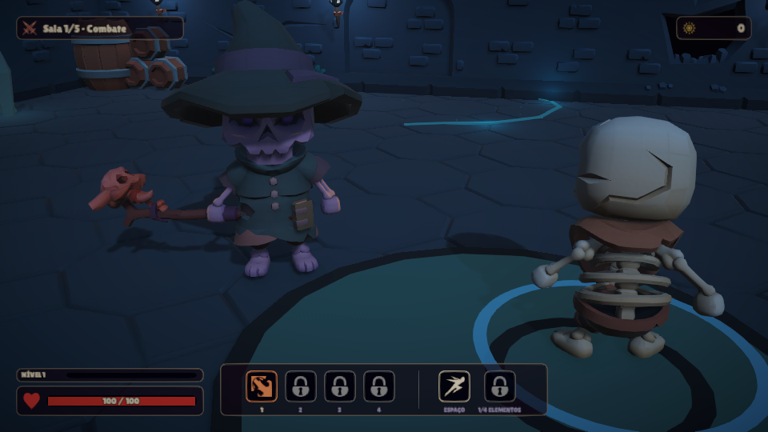
Cada trecho tem o seu elemental
- Salões de Cinza: Brasa Viva (Fogo). Jardim de Pedra: Sentinela (Terra). E agora a Cripta Afogada: o Afogado (Água), no lugar de um Arremessador da segunda onda
- Joga um orbe d'água em arco (azul, avisado no chão) que cai com um respingo e deixa uma poça por 5 segundos
- A poça encharca o herói (fica lento) e marca com Água os inimigos que estiverem nela: Fogo vira Vapor, Ar vira Nevasca, Terra vira Lama. O perigo vira oportunidade
- Resiste a Água e é fraco a Terra. Visual: o esqueleto mago do pack com a própria textura recolorida para verde-mar desbotado e o cajado do pack, sem peça de fora
- No Grimório, os três elementais dividem uma linha
Despertar da Quintessência, um por herói
- Apertar R com os quatro elementos agora solta uma explosão própria do herói em volta dele, já reagindo com o que pega: Erupção do Caçador (Rax, queima), Maré da Fonte (Liora, encharca e cura 15%), Rugido da Montanha (Brann, atordoa) e Olho do Vendaval (Vey, empurra longe e cega)
- O nome aparece sobre o herói com um anel na cor dele: o clímax da run (é o que quebra o escudo do chefe) ficou com a cara de cada um
Medição maior: 24 runs
- Com desvio de 65% (jogador razoável): 11 de 24 vitórias (46%). Rax 4/6, Liora 4/6 (o reforço dela funcionou), Brann 3/6 e Vey 0/6
- Vey reforçado sem mexer no dano por segundo: +10 de vida, esquiva de 20% (era 15%), adagas com alcance 3,2 e arco de 110°
Feitos
- Dez metas permanentes com painel próprio no título (botão FEITOS): vencer, vencer com os quatro, maestria 5, Ascensão 3, despertar a Quintessência, cumprir uma Provação, fazer uma Fusão, 100 abates numa run, quebrar o escudo de um chefe, 6 talentos numa run
- Cada uma paga 10 Fragmentos uma vez; o fim da run avisa as novas. Dá direção para as próximas runs
- Equilíbrio: o Vendaval (skill do Vey) empurrava longe demais para quem luta de adaga; agora bate mais (16) e empurra menos
- Nova medição de 24 runs depois dos ajustes: 15 de 24 (62%), nenhuma run travada. Vey 3/6 (era 0/6), Rax 4/6, Liora 2/6, Brann 6/6. Somando as duas medições grandes, a faixa fica entre 46% e 62% para alguém que joga razoavelmente, sem Refúgio nem maestria
Três talentos para as mecânicas novas (26 no total)
- Flanqueador: golpes pelas costas do alvo causam +25% (combina com contornar o Escudeiro)
- Pés Firmes: encharcado, você não fica lento (resposta às poças do Afogado e da Cripta)
- Despertar Intenso: a explosão da Quintessência causa +50%; só é oferecido com três elementos despertos
- Ajuste: Esc (ou B no controle) fecha os painéis do título
- Sons novos sintetizados pelo nosso gerador (ffmpeg): estouro do despertar da Quintessência, sino do Feito no fim da run e estalo do Divisor se partindo
Terceiro chefe final: a Rainha Afogada
- Senhora da Cripta, sorteada em cerca de uma run a cada seis: anda devagar até o herói, Erupções que deixam poças d'água (encharcam o herói e marcam os reforços com Água para reações), leque de orbes, pancada e teletransporte da segunda fase
- Elemental de Água (fraca a Terra), chama Afogados e Rastejantes; na última fase, o escudo que só a Quintessência quebra
- Visual com o mago esqueleto do pack ampliado, a textura recolorida do Afogado, o cajado e uma luz fria
- Medição de 24 runs com ela no sorteio: 13 de 24 (54%); as duas runs que chegaram na Rainha venceram (ela exige a quebra do escudo como os outros). Heróis entre 2 e 4 de 6
Sexto traço de Elite: Divisores
- Ao cair, cada inimigo da Elite vira dois Cinzentos (que contam para a onda e não se dividem de novo); para compensar, nascem com 15% menos vida. Skills de área e reações resolvem
Madrugada, décima primeira leva: conferido no navegador, calibrado para gente
O que o build no Chrome mostrou
- Desempenho: 120 quadros por segundo cravados no Chrome (o limite da tela), com a sala de 28 x 20 e inimigos em cena
- A primeira sala estava dura demais para quem está aprendendo: a sonda que calibrava a dificuldade desviava de todo aviso com reflexo perfeito. Agora ela desvia de 65% dos avisos, como alguém que joga razoavelmente
- Com isso: as duas primeiras salas viraram aquecimento (o inimigo bate 75% e depois 87%) e a Liora, que perdia as três runs da medição, ganhou arco de 65° no chicote e cura de 8% ao limpar a sala
- Medição com desvio de 65%, antes do reforço da Liora: 5 de 12 runs vencidas (Rax 2, Brann 2, Vey 1, Liora 0)
- Depois do reforço e do aquecimento: 8 de 12 (Rax 3, Brann 3, Liora 1, Vey 1). Com só 12 runs a variação é grande; a faixa de 40% a 67% para alguém que joga razoavelmente parece certa. Registro em
docs/sonda_balanceamento.txt - Dificuldade Tranquila nas Opções (título e pausa): o herói recebe 35% menos dano de tudo, inclusive chefes e perigos. Desligada por padrão, vale na hora e aparece no resultado da run
- Borda da sala: na entrada, a câmera mostrava um vazio preto embaixo da sala. Agora há uma mureta baixa e o piso continua além dela
Revisão de bugs do código da noite
- Congelar não derrubava o escudo do Escudeiro (o gelo saía antes do dano). Corrigido: o gelo sai depois do golpe
- O escudo olhava a posição de quem bateu; o Pilar de Pedra que nasce atrás dele era bloqueado. Agora vale a direção do golpe
- Continuar uma run depois da primeira sala mostrava o próximo nível como "MAESTRIA". Corrigido
- Na Provação Ileso, cada tique de poça contava um golpe; agora tiques seguidos contam um
- Sair e continuar reabria uma Provação já perdida; agora o save lembra
Madrugada, décima leva: arranjos de cada trecho
- Cinco arranjos novos que só aparecem no próprio trecho, com o triplo de chance: Forja (Salões de Cinza: quatro respiradouros de brasa, uma barreira de bigorna e um barril), Cisterna e Canais (Cripta Afogada: poças que encharcam e marcam com Água), Bosque de Pedra e Pedreira (Jardim de Pedra: pilares que cortam a linha de tiro; entulho e espinhos)
- Os 22 arranjos antigos continuam valendo em qualquer trecho; a primeira sala da run segue sem perigo. São 27 no total
- Com a poça marcando pelo trecho, a Cripta virou o lugar de jogar com Água: Fogo na poça vira Vapor, Ar vira Nevasca, Terra vira Lama
- Teste novo confere que, em cada arranjo novo, da entrada se chega ao fundo e aos dois cantos pela malha de navegação
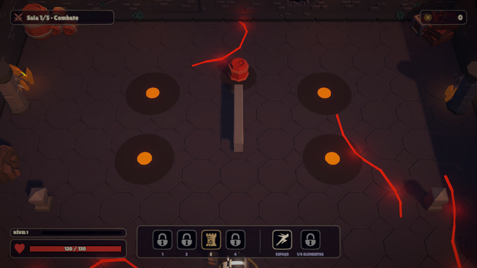
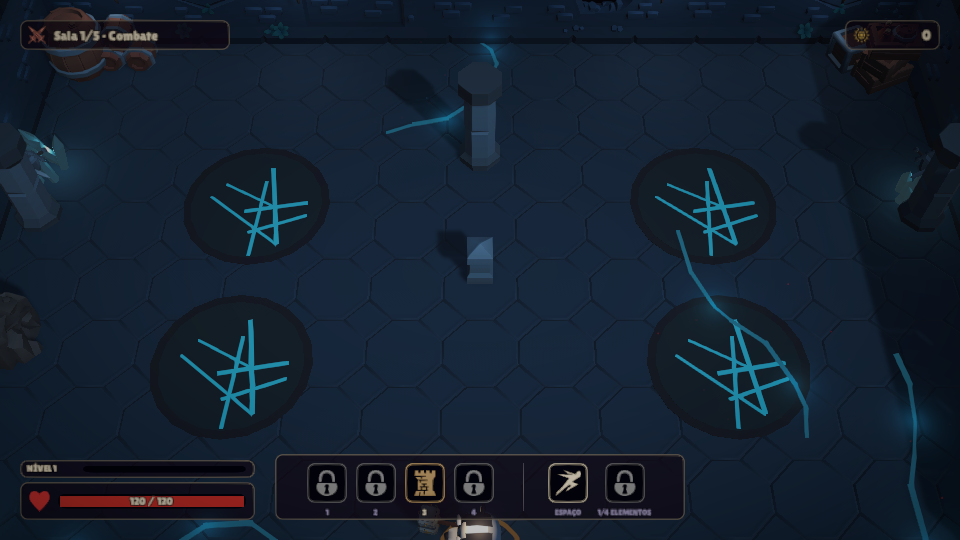
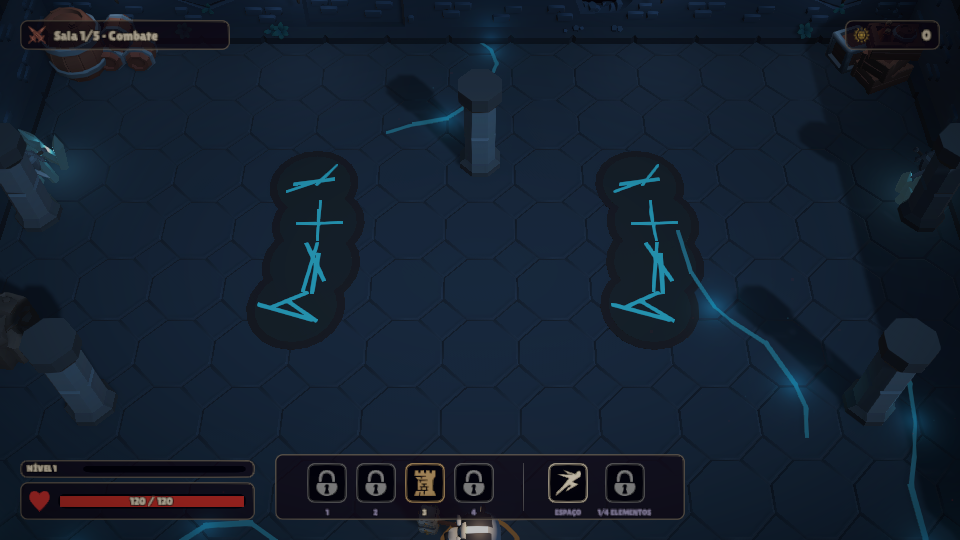
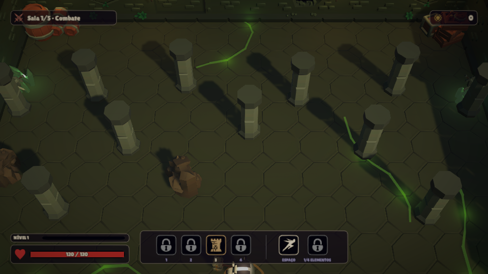
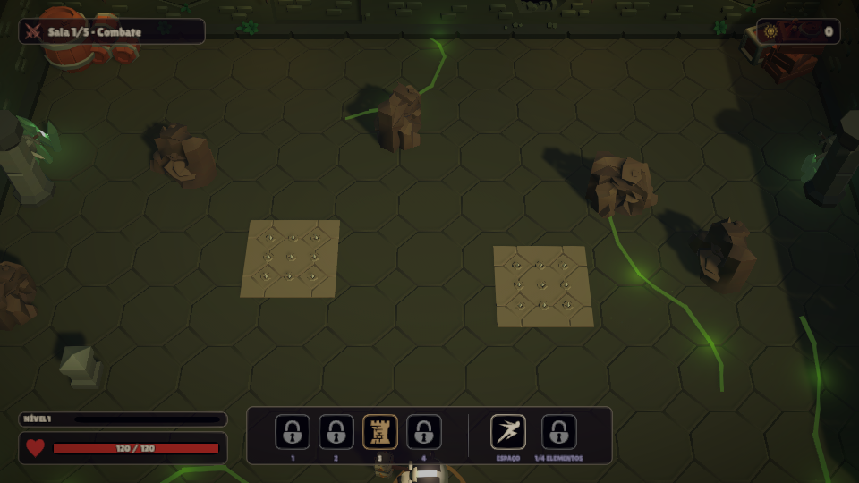
Madrugada, nona leva: a Provação
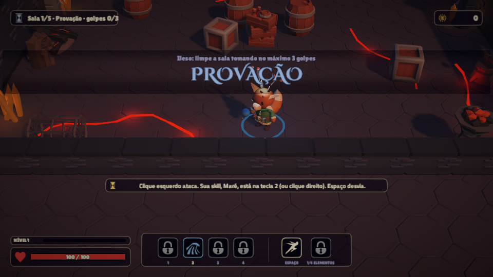
Sala nova no mapa
- Luta comum da profundidade com um desafio sorteado no letreiro, ícone de ampulheta no mapa
- Contra o relógio: limpar em 60 s (duas ondas) ou 84 s (três). Ileso: tomar no máximo três golpes; vários golpes no mesmo instante contam um
- O canto da tela mostra o que falta ("42 s", "golpes 1/3") e avisa PROVAÇÃO PERDIDA na hora em que estoura
Prêmio e ritmo
- Cumprida: talento extra (abre a escolha com a sala limpa) e 15 de Essência a mais. Perdida: a sala paga o normal, sem castigo
- Aparece da terceira camada em diante, no máximo uma por camada; o sorteio gasta o mesmo número do gerador que a sala comum, então o resto do mapa de cada semente não muda
- Dá uma escolha de risco no mapa: a porta da Provação paga mais para quem joga limpo
O chão entra nas reações
- A poça de corrupção agora marca os inimigos dentro dela com o elemento do trecho: Fogo nos Salões, Água na Cripta, Terra no Jardim
- Uma skill de outro elemento detona a reação. Com um elemento só, já dá para reagir atraindo o bando para a poça
- A marca da poça não troca a que o herói pôs; o herói não é marcado. Uma dica explica na primeira vez
Madrugada, oitava leva: o Escudeiro
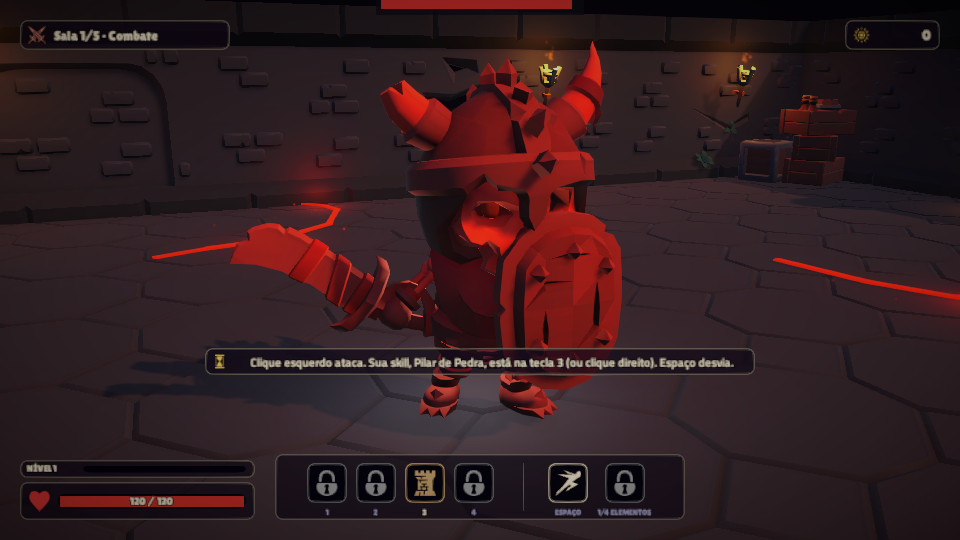
Um inimigo que pede posição
- Esqueleto guerreiro com o escudo grande e a lâmina do próprio pack KayKit, tingido de aço frio; fica em guarda (pose Blocking) com o emblema do escudo para a frente
- Golpe direto que vem da frente leva só 15%, não empurra e não faz o Escudeiro recuar. O rótulo ESCUDO e o som de bloqueio avisam
- Ele gira devagar (100° por segundo): dá para contornar ou passar de dash e bater pelas costas
- Reações, queimadura e zonas no chão atravessam o escudo. Atordoado, congelado, enraizado ou com a armadura quebrada, o escudo cai: Lama, Nevasca, Obsidiana e o Pilar de Pedra abrem a guarda
- Entra da quarta sala em diante no lugar de um Rastejante da primeira onda (sala comum e Elite): a sala não fica maior, fica diferente
- A sonda de balanceamento aprendeu a dar a volta nele. Nova medição: 8 de 12 runs vencidas (Rax e Brann 3 de 3, Liora e Vey 1 de 3), mortes concentradas nas Elites; o Escudeiro aparece entre as fontes de dano sem dominar. Registro em
docs/sonda_balanceamento.txt
Madrugada, sétima leva: maestria por herói
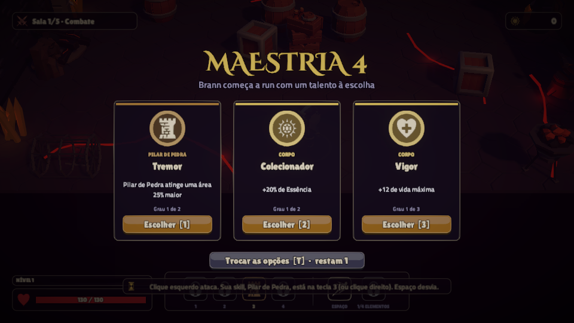
Como funciona
- Cada run dá experiência ao herói usado: uma por sala vencida, uma a cada 10 abates e 10 pela vitória. Perder também conta
- Cinco níveis, e cada um vale só para aquele herói: 1) +10 de vida, 2) um talento à escolha no começo da run, 3) +8% de dano, 4) +1 troca de talentos, 5) começa com 30 de Essência
- Ritmo: duas derrotas no meio da run já dão a maestria 1; umas quatro vitórias levam à 3; a 5 pede umas oito
- Dá motivo para jogar com os quatro heróis e para insistir no favorito
Onde aparece
- Na carta do herói, no título ("Maestria 2"), no Refúgio (maestria e vitórias de cada um) e no Grimório (a lista dos cinco níveis)
- No fim da run: quanto a run rendeu e, se subiu, o nível novo e o que ele dá
- O talento da maestria 2 abre o painel com o título MAESTRIA antes da primeira onda
- Save antigo continua valendo: o campo da maestria é opcional e começa em zero
- Interface: com o painel de talento aberto, a dica desce para baixo dos botões e o letreiro da sala sai da frente
- A sonda de balanceamento zera o Refúgio e a maestria a cada run, para medir sempre um jogador novo
Madrugada, sexta leva: calibração pela sonda, salas maiores, fusões e três inimigos elementais
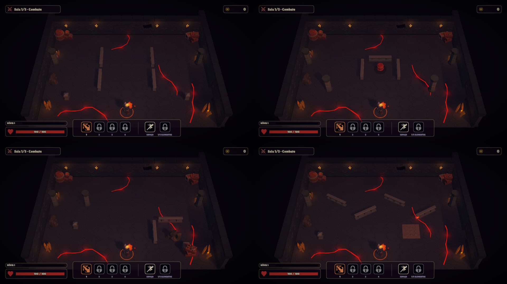
Calibração da dificuldade
- A sonda de balanceamento agora joga como alguém razoável: marca com uma skill e detona com outra, enche a Quintessência nos reforços, aperta R e quebra o escudo, sai das poças, e registra de onde vem o dano
- Com isso apareceu o pico de verdade: Bruto, Rastejante, Arremessador e a primeira Elite. Ajustei os números, a primeira sala passou a não ter perigos e bater no escudo do chefe carrega a Quintessência
- Resultado: 7 de 12 runs vencidas pelo roteiro (que desvia de tudo com reflexo perfeito, mas joga sem estratégia), com as mortes espalhadas e os chefes caindo no fim da luta. O registro está em
docs/sonda_balanceamento.txt
Salas maiores e mais variadas
- A sala da run passou de 20 x 16 para 28 x 20 m; a câmera acompanha o herói
- Quatro arranjos com estrutura feitos de barreiras baixas: Três Corredores, Fortim (com um barril de pólvora no meio), Bastião em L e Galeria. São 22 arranjos
Fusões: o terceiro elemento
- Magma e Vapor deixam área no chão. A skill de um terceiro elemento sobre ela vira uma fusão: Obsidiana (Magma + Água, atordoa), Incêndio (Magma + Ar, espalha o fogo), Ciclone (Vapor + Ar, puxa e cega) e Gêiser (Vapor + Terra, arremessa e encharca)
- Conta como reação: enche a Quintessência e usa os bônus de reação
Inimigos elementais e o enxame
- Afinidade elemental: inimigo elemental leva metade do próprio elemento e 1,6 vez do elemento que o vence (Água vence Fogo, Terra vence Água, Ar vence Terra, Fogo vence Ar). O número e um rótulo mostram FRAQUEZA ou RESISTE
- Brasa Viva (Salões de Cinza): elemental de Fogo, não queima e estoura em brasas ao morrer
- Sentinela de Pedra (Jardim de Pedra): torre parada de Terra que atira e não é empurrada
- Cinzentos: bando de três ou quatro esqueletos pequenos e rápidos, da terceira sala em diante
- Os três ganharam peças próprias modeladas no Blender: Cinzento (capuz e corcunda), Brasa Viva (coroa de chamas, placas de carvão, maça) e Sentinela (elmo-totem, casco, pedestal)
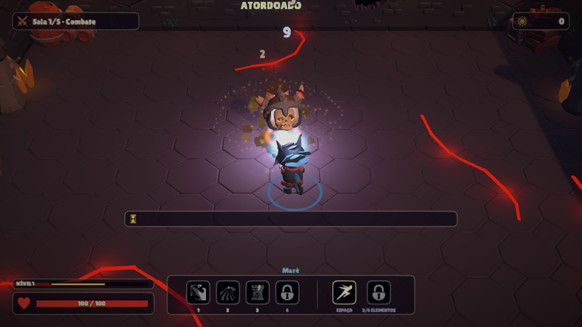
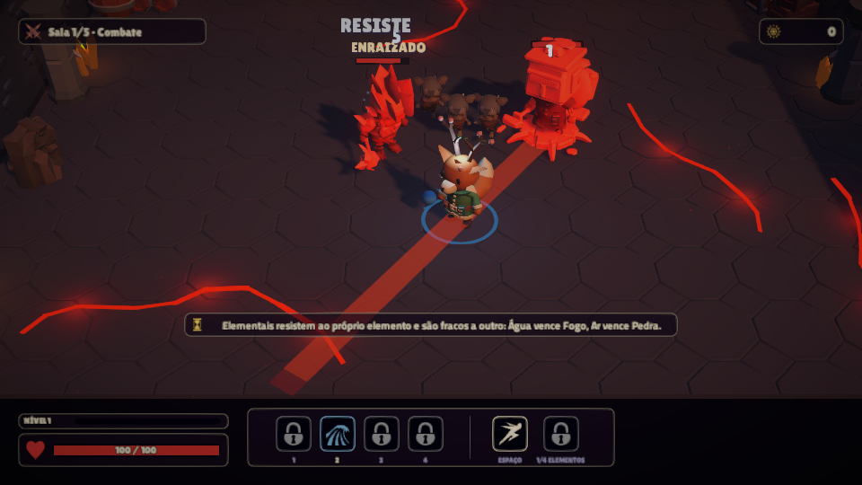
Madrugada, quinta leva: segundo chefe final, a Tecelã das Cinzas
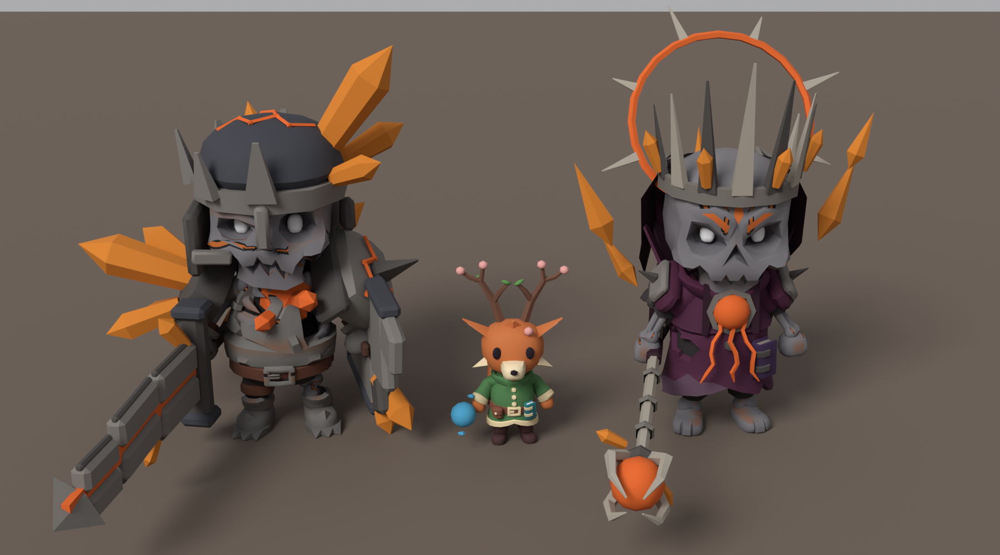
Tecelã das Cinzas
- Cada run sorteia o chefe final: o Guardião (corpo a corpo, blindado) ou a Tecelã, a antiga mestra do santuário
- Ela luta de longe: leques de brasa, erupções, anéis e teletransporte para um ponto avisado longe de você. Recua se você encosta
- Na última fase, como o Guardião, levanta o escudo que só a Quintessência quebra
- Arte própria modelada no Blender: coroa alta com halo de brasa, véu, manto roxo, núcleo com fios de brasa, cajado com orbe e lascas de cristal
- Os chefes entram com o nome no letreiro ("Chefe final" ou "Mini-chefe")
Outras entradas
- Pausa com o resumo da run (herói, nível, sala, trecho, talentos, Ascensão)
- Refúgio e cartas do título mostram vitórias por herói
- Sons próprios para subir de nível e para o Campeão de Elite
- Segunda revisão de bugs: o save ficou mais firme (ofertas da Loja, do Mestre, do Pacto e dos talentos fixas por sala; o dano levado vai para o save, então sair e continuar não devolve a vida; resultado gravado antes da pausa final; save inválido vira run nova; apagar o progresso descarta a run). O Continuar não fica mais por cima do Refúgio, a dica do primeiro nível aparece sobre a escolha e morrer na poça mostra quem derrubou
- A sala do Mestre agora tem o Mestre em pessoa, que cumprimenta e agradece a bênção escolhida
- A Tecelã nunca foi enfrentada por uma pessoa; o cajado em repouso fica apontado para a frente, como uma lança
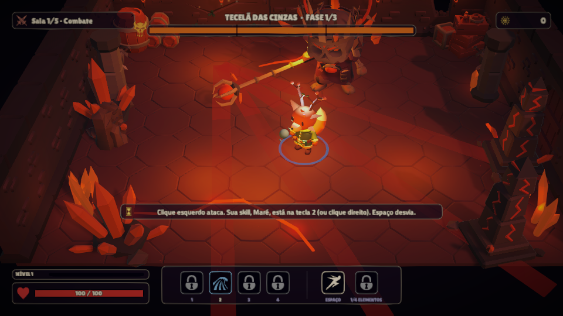
Madrugada, quarta leva: o Carrasco (mini-chefe), talentos de reação e retoque de Rax e Vey
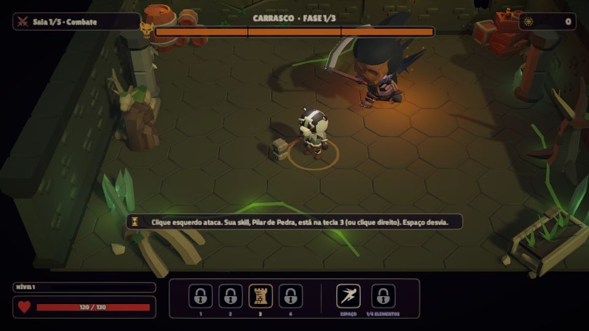
Carrasco
- Mini-chefe que fecha as salas de Elite da sexta sala em diante, no lugar do Campeão: esqueleto guerreiro grande com o capuz e a foice do Ceifador
- Usa o mesmo cérebro do Guardião (três fases, cinco ataques avisados) com números menores, 240 de vida e sem o escudo da Quintessência
- Ganha barra de chefe no alto e a música de luta, que agora volta ao normal quando a sala é limpa
Rax e Vey
- Rax: a crina virou sete mechas de chama em duas camadas; de cima lê como um tufo de fogo
- Vey: o redemoinho abre na altura do quadril e forma um aro verde-água visível na câmera do jogo
- De trás a crina do Rax ainda mostra frestas; as fitas do Vey podem cruzar os braços em alguns golpes
- O Carrasco nunca foi enfrentado por uma pessoa
Talentos de reação
- Seis talentos novos, um por par de elementos: Névoa Densa (Vapor), Coração de Lava (Magma), Olho da Fornalha (Tempestade de Fogo), Atoleiro (Lama), Inverno Profundo (Nevasca) e Chuva de Pedra (Estilhaços)
- Cada um faz aquela reação causar +40% e pegar uma área maior, inclusive a poça ou nuvem que ela deixa. Só aparecem com os dois elementos despertos
- O inventário lista as seis reações e acende as que você já pode detonar
Pequenas melhorias
- A tela de derrota diz quem derrubou o herói (inimigo, chefe ou perigo do cenário)
- Opção para desligar o tremor de tela, ao lado da tela cheia
- A porta de uma Elite tardia avisa que o Carrasco está lá
- Loja vende um Pergaminho de talento da quarta sala em diante; o Pacto sorteia três de cinco (novos: Eco e Pressa)
- Grimório no título (heróis, inimigos e reações) e o herói da carta em foco comemora
- Música própria da Cripta Afogada e do Jardim de Pedra, com troca suave entre trechos
- Grau III do Santuário dá efeito à skill: chão em chamas, congelar, bloqueio duplo com espinhos, dash extra
- Revisão de bugs: a tecla que escolhia o talento também soltava a skill (e o A do controle dava dash). Corrigido: com o jogo pausado e no quadro em que a pausa sai, o herói ignora comandos. Também: espinhos não congelam por engano, barril não conta como abate nem é curado pelo Xamã
- Dois traços novos de Elite: Voláteis (quem morre deixa uma explosão avisada no chão) e Protegidos (o primeiro golpe em cada um é bloqueado)
- As ombreiras do Guardião foram separadas por braço e acompanham o golpe sem atravessar o tronco
- A vitória avisa quando libera uma Ascensão nova
- Continuar run: o jogo grava ao entrar em cada sala (no navegador). Se a aba fechar, o título oferece retomar dali, com herói, elementos, talentos, graus, bênçãos, pactos, vida e Essência. Começar uma run nova ou terminar a run apaga o save
- O mapa (Tab) mostra as faixas dos trechos atrás das salas
- Treino com o seu herói: usa o herói da última carta em foco no título, com os textos e as teclas do elemento dele
- Página do WebGL própria: carregamento com a arte do título, barra dourada e os controles; botão de tela cheia; o jogo abre direto no título, sem a tela da Unity
- Dicas de primeira vez no rodapé: controles, primeiro nível, Santuário, segunda skill (reações), Elite, Loja, Pacto e Quintessência. Cada uma aparece uma vez por jogador
- Equilíbrio: com o Carrasco, os traços novos e os ataques novos do Guardião, a sonda por roteiro caiu de 3 para 0 vitórias em 4. Aliviei a Investida, o Anel, o Carrasco e os Voláteis; ela voltou a vencer 1 de 4, e as mortes restantes são do roteiro contra o escudo do Guardião e contra a primeira Elite. Precisa de uma run de pessoa para fechar os números
- Poças de corrupção: chão chamuscado com veios de brasa que fere herói e inimigo (dá para atrair o bando). Tomam a cor do trecho; queimam, e na Cripta encharcam. Dois layouts novos, Travessia e Charcos: são 18
- Build WebGL refeito (23,6 MB) e conferido no Chrome com Vey e Liora: sem erros no console
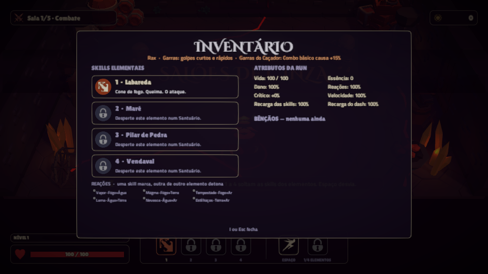
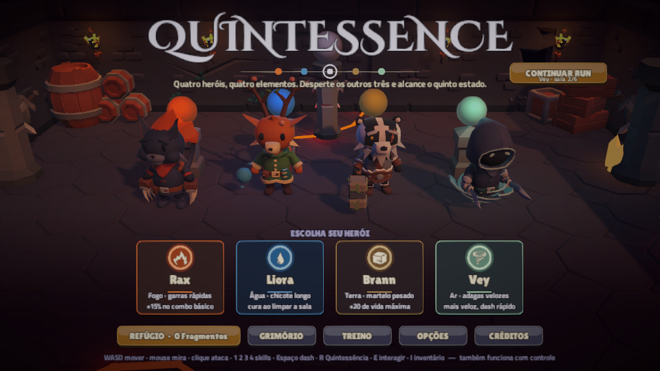
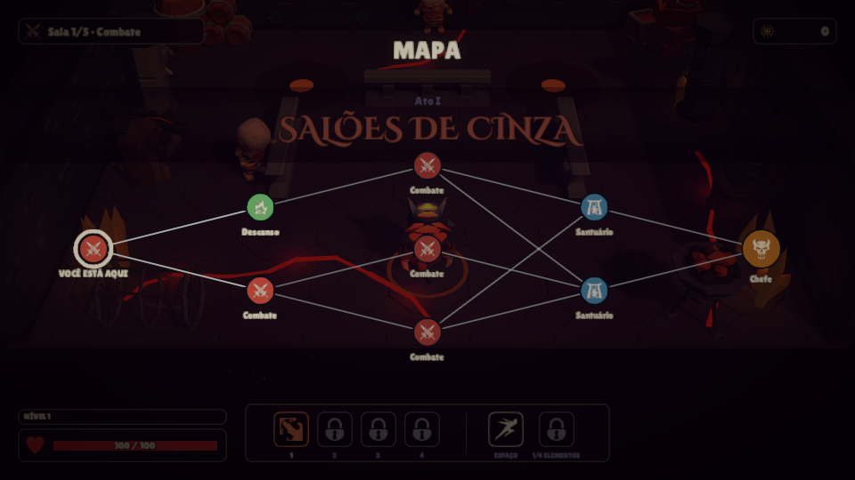
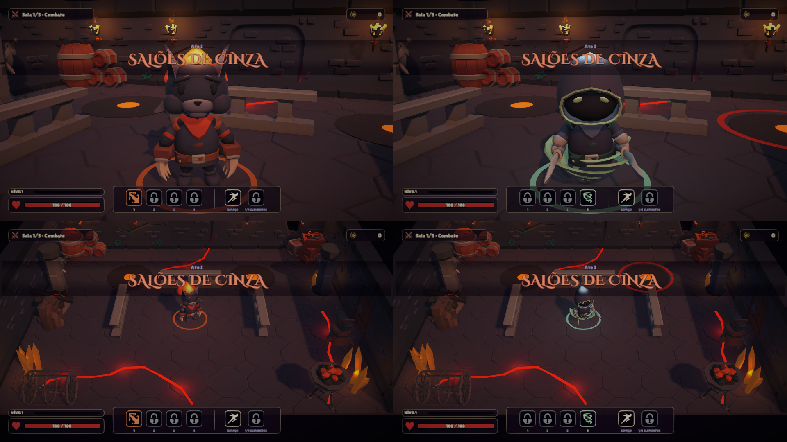
Madrugada, terceira leva: trechos com cenário próprio, Ascensão, Santuário que aprofunda skill, nove bênçãos
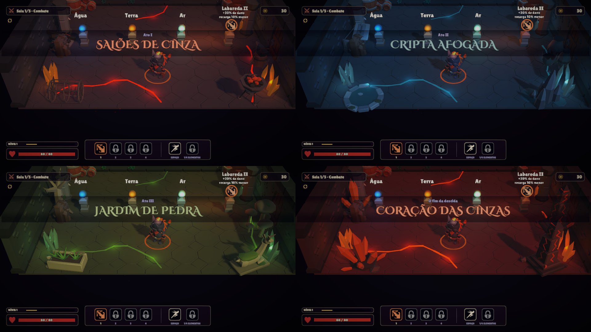
Cenário por trecho
- 16 adereços modelados no Blender do seu PC, quatro por trecho: Salões de Cinza (braseiro, vigas queimadas, bigorna, gaiola), Cripta Afogada (sarcófago, urnas, estátua, bacia d'água, estalagmites), Jardim de Pedra (árvore petrificada, cogumelos, raízes, canteiro, cervo de pedra) e Coração das Cinzas (obelisco com veio de brasa, cacho de cristais)
- Cada sala de luta e a do chefe recebem quatro deles nas bordas, com colisão: dá para usar de cobertura
Santuário
- Além de despertar um elemento novo, agora dá para aprofundar uma skill que já tem: grau II e III, cada um com +30% de dano e recarga 10% menor
- É uma escolha de build: espalhar (mais reações) ou concentrar numa skill
Ascensão e bênçãos
- Depois da primeira vitória o título mostra a Ascensão: até cinco níveis, um liberado por vitória. Cada nível dá +12% de vida e +10% de dano aos inimigos e +25% de Fragmentos
- Nove bênçãos novas (29 no total): Carvão Vivo, Orvalho, Casca de Espinhos, Rabo de Vento, Mão Firme, Golpe Final, Curiosidade, Faro de Ouro e Sede de Luta
Limites
- Os adereços dos cantos da frente ficam na borda de baixo da tela e podem cobrir o herói quando ele encosta ali
- A estátua da cripta e o cervo do jardim são as peças mais fracas
- Ascensão nunca foi jogada: os números são um palpite
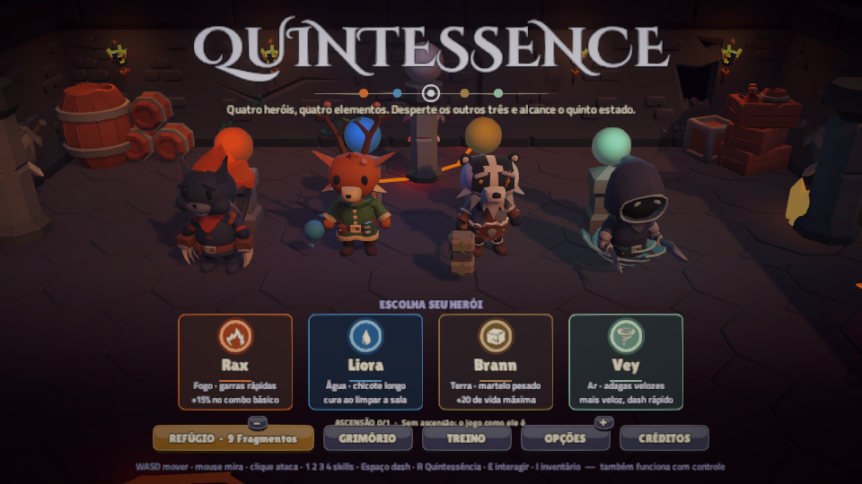
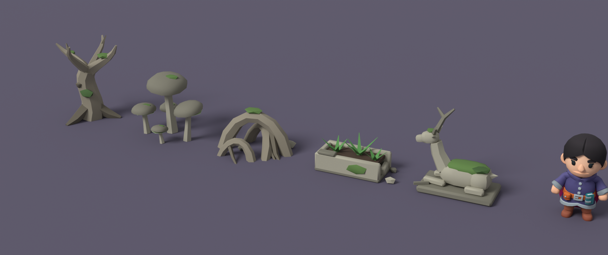
Madrugada, segunda leva: chefe com cara de chefe, inimigos reconhecíveis, golpe próprio por herói e salas com cenário
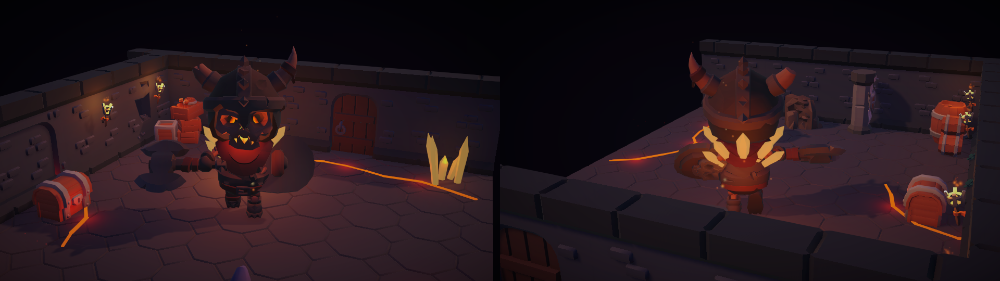
Guardião das Cinzas
- Elmo-coroa quebrado, ombreiras assimétricas, leque de cristais nas costas, espadão de pedra e um núcleo de brasa no peito, modelados no Blender do seu PC e presos aos ossos do esqueleto do pack
- Dois ataques novos: Investida (linha larga, depois ele atravessa a sala e fica exposto), a partir da segunda fase, e Anel de Cinzas (dois anéis de erupções com uma faixa segura entre eles), na última
Golpe básico de cada herói
- Rax: garras curtas e rápidas. Liora: chicote que alcança longe numa faixa estreita. Brann: martelo lento, largo e pesado. Vey: adagas, o mais rápido, com mais crítico
- Continua sem elemento. O dano por segundo é parecido nos quatro; muda o ritmo e o alcance
Outras entradas
- Ceifador, Arremessador e Xamã ganharam capuz e foice, chapéu e bombas, máscara de cervo e cajado-totem. O Campeão leva uma coroa de cristais. A bomba do Arremessador agora voa em arco
- Descanso, Mestre, Tesouro e Pacto têm cenário próprio com peças do pack; quatro layouts estruturais novos (Ponte, Anel, Diagonal, Colunata): são 16
- Os biomas tingem a pedra da sala e mudam a mistura de inimigos: mais ataque à distância na Cripta, mais peso no Jardim
- Refúgio: Sabedoria (mais experiência) e Intuição (trocar as três opções de talento, tecla T)
- Dificuldade: salas comuns mais duras, com terceira onda da sexta sala em diante; Elite um pouco mais leve
- A tela de resultado mostra herói, nível, abates, talentos e bênçãos
Limites
- A dificuldade foi ajustada por uma sonda de roteiro (um bot simples vencia metade das runs sem perder vida nas salas comuns). Falta uma pessoa jogar
- As ombreiras do chefe não acompanham os braços; em golpes altos atravessam o modelo. O espadão fica fino visto de cima
- A foice do Ceifador e o cesto do Arremessador só foram conferidos em uma pose
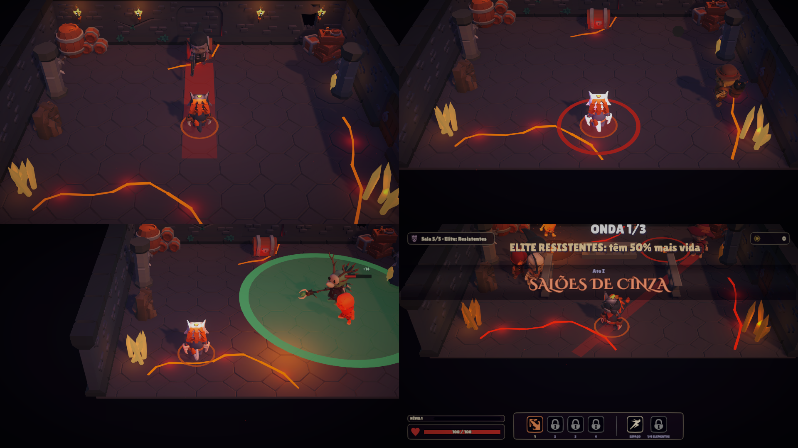
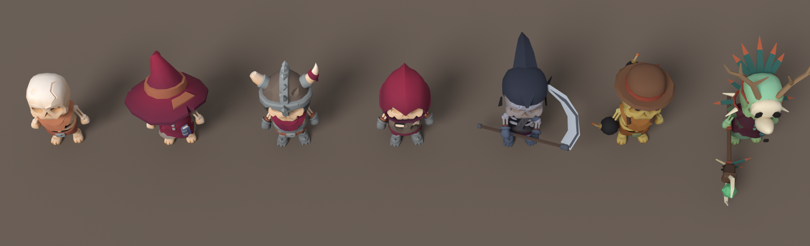
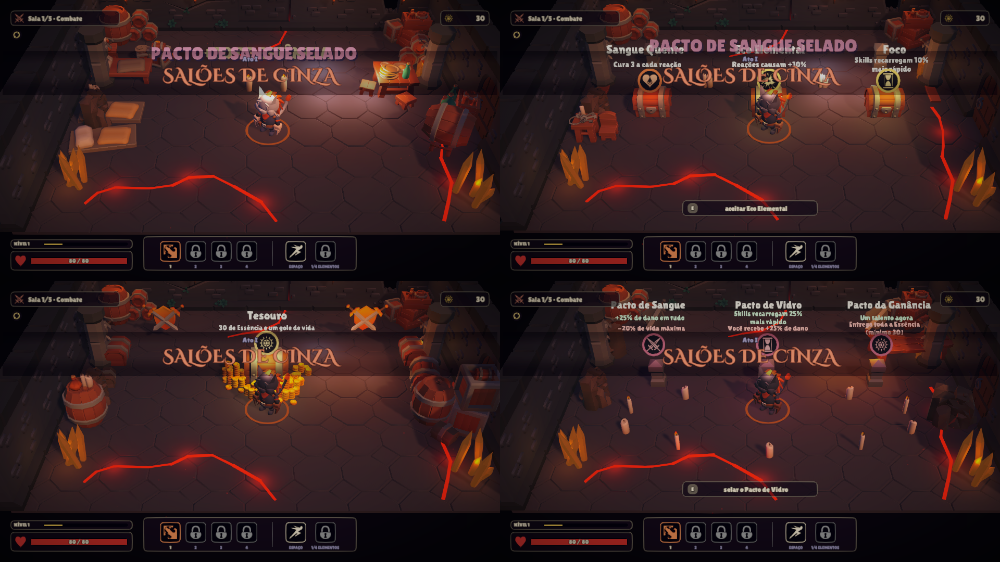
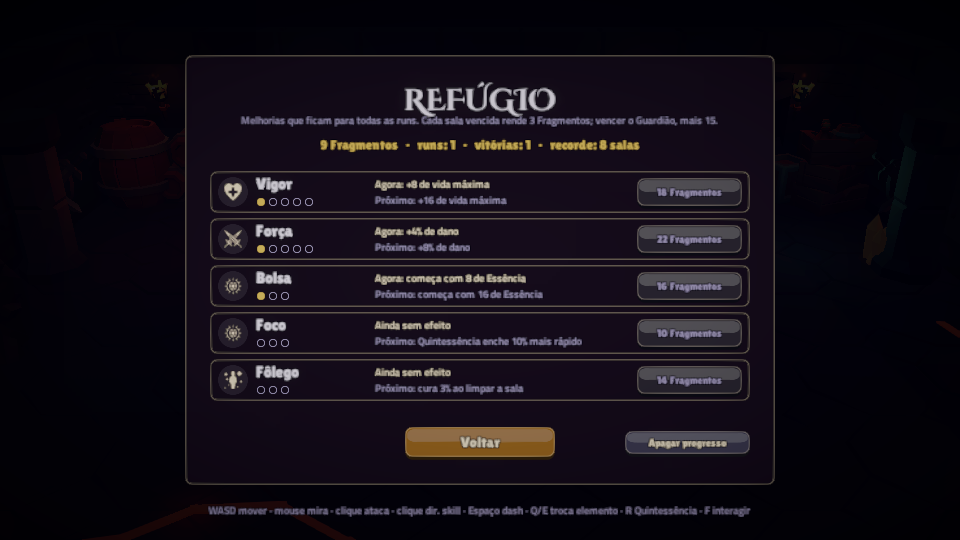
Madrugada de 11 para 12/11: heróis do 2D, nível e talentos, inimigos, perigos, salas e biomas
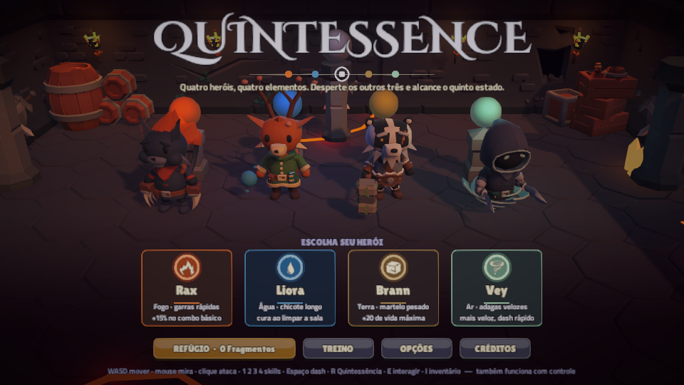
Os quatro heróis do Quintessence 2D
- Rax (Fogo, felino caçador com garras), Liora (Água, espírito cervo-raposa com orbe), Brann (Terra, texugo com martelo de pedra) e Vey (Ar, espírito encapuzado sem pernas, duas adagas)
- Cabeças, caudas e armas foram modeladas no Blender do PC do Leonardo (por SSH) e presas aos ossos dos corpos do pack; as animações são as do pack
- Escolher o herói define a primeira skill, a passiva e o conjunto de golpes (garras, orbe, martelo, adagas)
- A parte mágica de cada um (crina do Rax, orbe da Liora, rachaduras do martelo, olhos e debrum do Vey) assume a cor da última skill usada
- Passivas: Rax +15% no combo; Liora cura ao limpar a sala; Brann +20 de vida; Vey mais veloz e dash mais rápido
Limites
- Liora e Brann ficaram no nível do pack. A crina do Rax ainda é a peça mais dura, e o redemoinho do Vey quase some visto de cima
- As pernas de felino do Rax e a saia de folhas da Liora do 2D não foram feitas
- As skills usam as mesmas animações nos quatro heróis
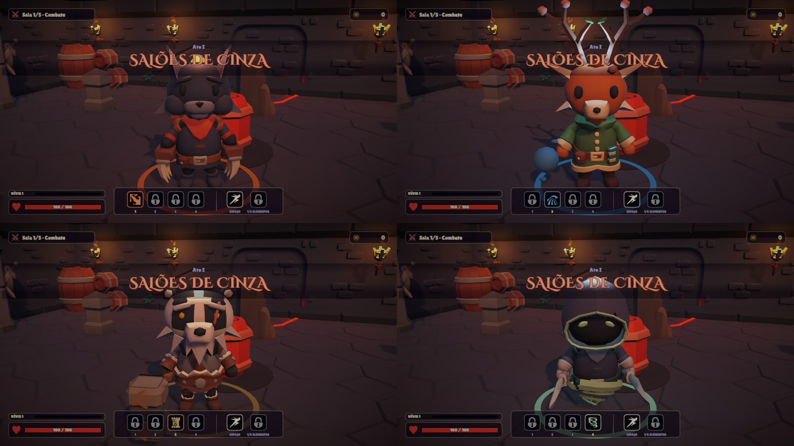
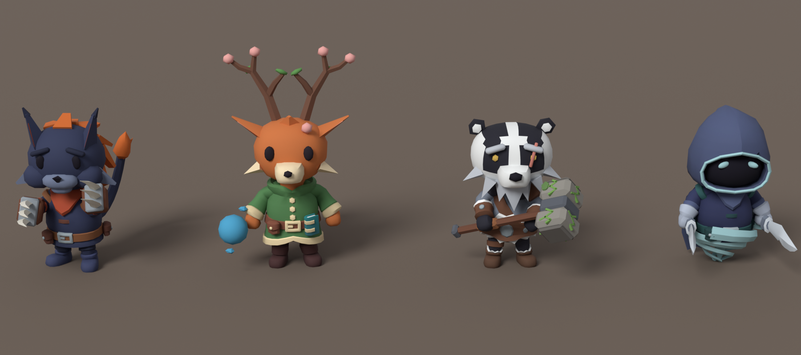
Nível e talentos
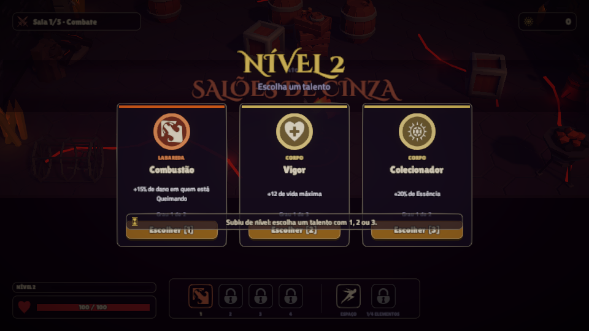
- Inimigo derrotado dá experiência; cada nível oferece três talentos para escolher um (clique, teclas 1-2-3 ou controle)
- 17 talentos: cinco de corpo e três por skill. Exemplos: Labareda deixa o chão em chamas, Maré congela, Pilar bloqueia mais um golpe e devolve dano, Vendaval dá pressa, +1 carga de dash
- A escolha só abre com a sala limpa: nunca interrompe a luta
Três inimigos novos e o Campeão
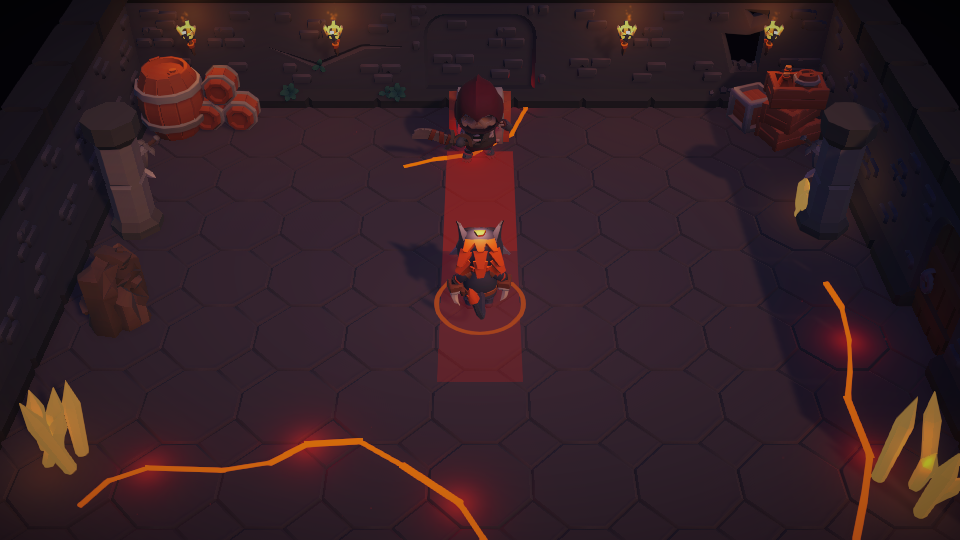
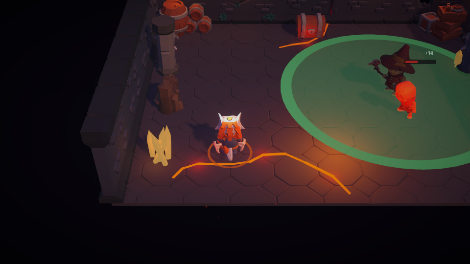
- Ceifador: avisa uma linha larga e atravessa a sala por ela. Fica exposto depois
- Arremessador: joga uma bomba onde você está; o círculo avisa e basta sair
- Xamã: cura os aliados feridos em volta (aviso verde). Sozinho, atira. É o alvo a derrubar primeiro
- Campeão: a última onda das salas de Elite traz um inimigo maior, com o dobro da vida, que paga Essência e experiência extra
- Eles entram aos poucos: Ceifador na segunda sala, Arremessador na quarta, Xamã na quinta
Perigos, salas e biomas
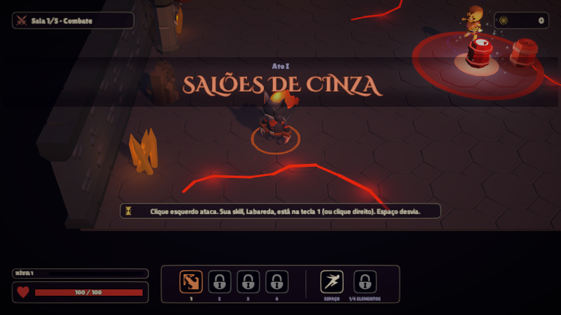
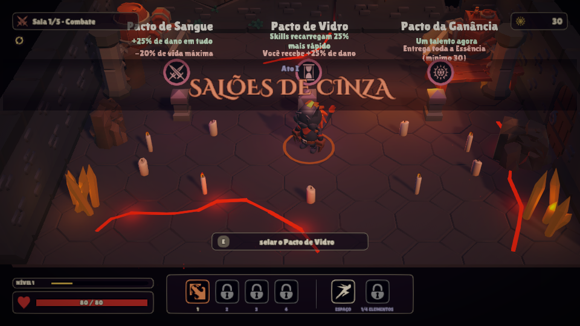
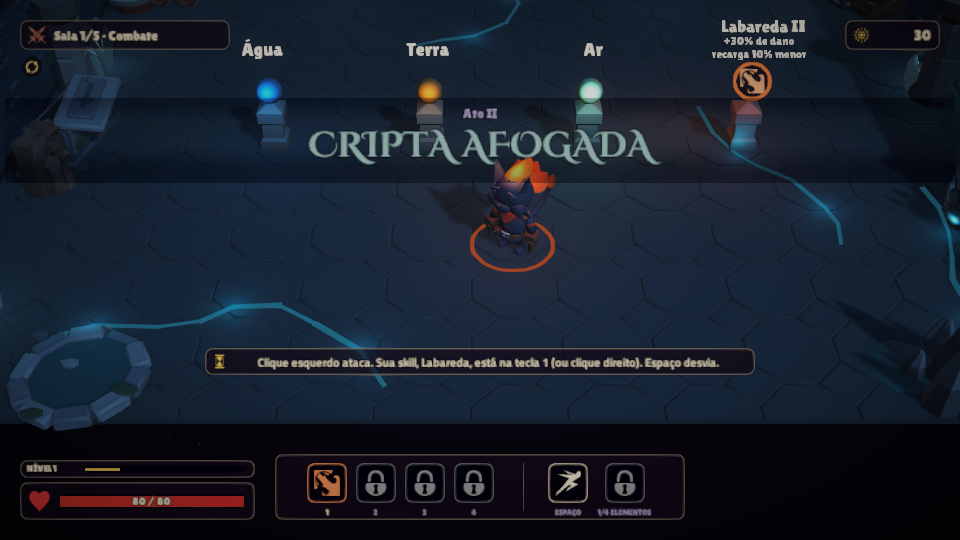
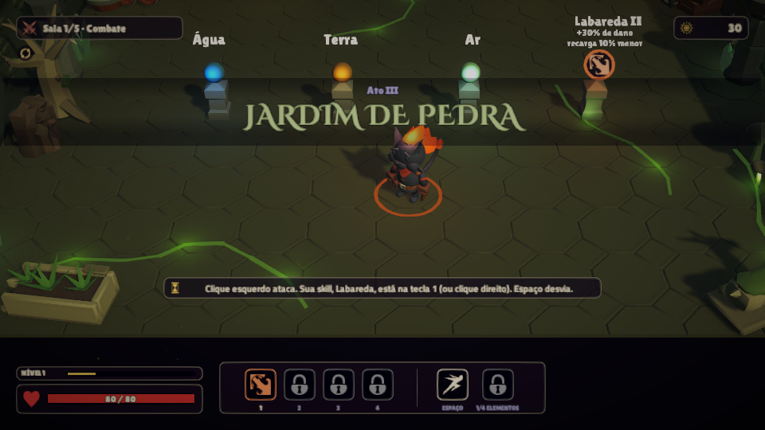
- Barril de pólvora: qualquer golpe acende; a explosão fere muito mais os inimigos que o herói e acende os barris vizinhos
- Armadilha de espinhos: avisa e sobe; fura herói e inimigo
- Seis layouts novos (Paiol, Espinhos, Arena, Trincheira, Escombros, Câmara): agora são doze
- Tesouro: um baú com Essência e um gole de vida. Pacto: um ganho forte por um custo permanente (Sangue, Vidro ou Ganância), e dá para recusar
- A run passou de 8 para 10 salas e atravessa três trechos com clima próprio: Salões de Cinza, Cripta Afogada e Jardim de Pedra, até o Coração das Cinzas, a sala do chefe
Limites desta leva
- Nada disso foi jogado por uma pessoa: os testes são roteiros. A dificuldade com mais inimigos, mais salas e talentos precisa de uma run sua para calibrar
- Os biomas mudam luz e cor da corrupção; as paredes e o piso são os mesmos
- A bomba do Arremessador não tem projétil visível, só o aviso e a explosão
Combate novo: golpe básico neutro, skills no 1-2-3-4, controle e inventário
O que mudou no combate
- Golpe básico sem elemento: dá dano e empurra, mas não marca nem reage. Não existe mais "elemento atual", troca de elemento nem Golpe de Troca
- Skills elementais nas teclas 1, 2, 3 e 4, uma por elemento, cada uma com a sua recarga. Você começa com uma e desperta as outras nos Santuários
- As skills combinam entre si: uma marca, a de outro elemento detona. Fogo + Água = Vapor, Fogo + Terra = Magma, e assim nas seis reações
- Cada skill tem um papel: Fogo é o ataque; a Maré cura 8% da vida e limpa status; o Pilar de Pedra bloqueia o próximo golpe por 3 s e quebra armadura; o Vendaval empurra tudo e recarrega o dash
- O golpe básico bate 15% mais forte em quem está marcado, então ele preenche o intervalo entre as skills
- Na Quintessência, até o golpe básico dispara reação
Controles
- Teclado: WASD, mouse mira, clique esquerdo ataca, 1-4 skills, Espaço dash, R Quintessência, E interage, I inventário, Tab mapa, Esc pausa
- Controle: analógicos movem e miram, RT ou X ataca, direcional solta as skills, A dash, Y Quintessência, B interage, Select inventário, Start pausa. Os menus navegam pelo direcional
- Inventário novo: skills com o papel de cada uma, atributos da run e bênçãos. O jogo para enquanto está aberto
- Barra de habilidades refeita: quatro skills com a tecla e a recarga de cada uma
- Treino refeito em seis passos para ensinar esse modelo
Limites
- O controle não foi testado com um controle de verdade. Está escrito e compila, mas não tenho como apertar um botão físico daqui
- Subi o combo básico de 6/6/10 para 8/8/13 por conta própria: sem os efeitos elementais no golpe, o herói do roteiro passou a morrer na primeira sala
- A dificuldade mudou de novo e eu não sei para que lado. Com uma skill só, o roteiro ainda sofre nas duas primeiras salas; com duas ou mais, passa. Precisa de você jogando
- As bênçãos "+20% de dano de Fogo" e parecidas agora só afetam a skill e as reações daquele elemento
- A bênção "Mão Trocada" virou "Mão Pesada" (golpe básico em alvo marcado +25%)
- O dash perdeu as variações por elemento (rastro de fogo, duas cargas do Ar); o papel de cada elemento foi para a skill
- O clique direito ficou como atalho para "a primeira skill pronta"; você não pediu, posso tirar
Loja: o mercador reage e o preço mostra se dá para pagar
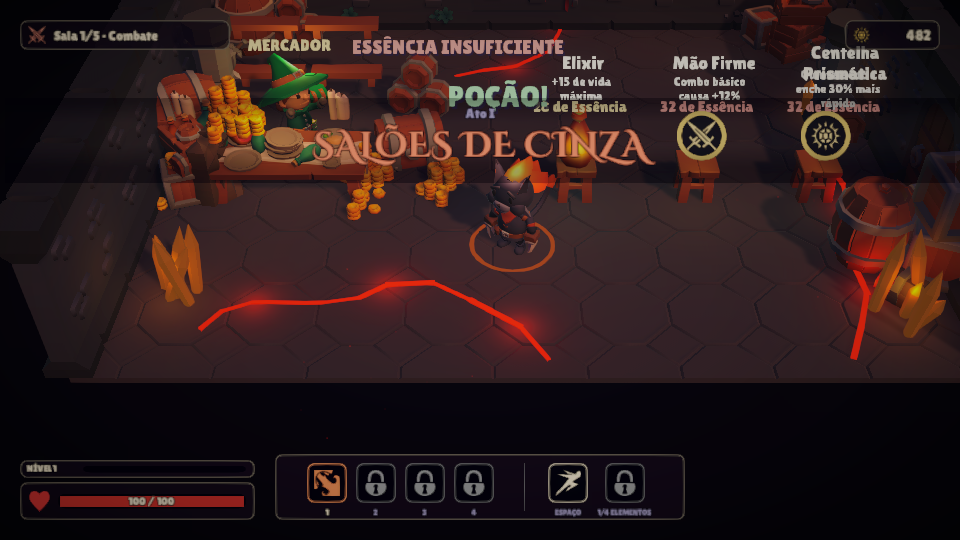
O que mudou
- O mercador vira o corpo para acompanhar o herói e cumprimenta quando ele chega perto
- A cada compra ele comemora e diz "Boa escolha!"; sem Essência, encolhe e diz "Falta Essência..."
- Preço em dourado quando a Essência paga e em vermelho quando não; atualiza depois de cada compra
- Luz própria nas estantes, que sumiam no escuro, velas sobre o barril e um estandarte verde atrás da banca
Limites
- No print o contador de Essência mostra 482, mas o teste deixou 30 por baixo dos panos para os preços aparecerem nas duas cores; no jogo o contador e os preços andam juntos
- O baú de ouro continua parecendo um barril visto de cima: o modelo do pack não abre
- O mercador ainda é o modelo do mago com outra paleta
Passada de animação: herói, inimigos e Guardião
Herói
- Combo: dois cortes de cajado diferentes e um golpe de cima para fechar. Antes os três eram o mesmo gesto de disparo
- Uma animação de skill por elemento: disparo no Fogo, varrida na Água, erguer do chão na Terra e giro no Ar
- Dash: a esquiva certa para frente, trás, esquerda ou direita, conforme para onde ele vai em relação a onde olha
- Novas: reação ao apanhar, queda ao morrer e comemoração ao entrar na Quintessência
Inimigos e Guardião
- Todo inimigo recua ao apanhar, mas só enquanto persegue: golpe já avisado não é cortado
- O Explosivo provoca antes de estourar
- Guardião: golpe saltado com o machado, arremesso nos projéteis, invocação na erupção e um rugido na troca de fase, quando ele para por quase um segundo
Limites
- São clipes do pack escolhidos e encaixados no tempo de cada ação; nenhuma animação foi feita à mão
- De cima, o chapéu do mago cobre boa parte do corpo: a diferença aparece mais no cajado
- Não ajustei o instante do dano ao ponto exato do golpe em cada clipe
- O rugido dá ao jogador quase um segundo livre a cada troca de fase; isso deixa o chefe um pouco mais fácil
- A animação de morte dos inimigos não aparece mais, porque eles se desmontam em ossos
Título com identidade: o altar dos cinco
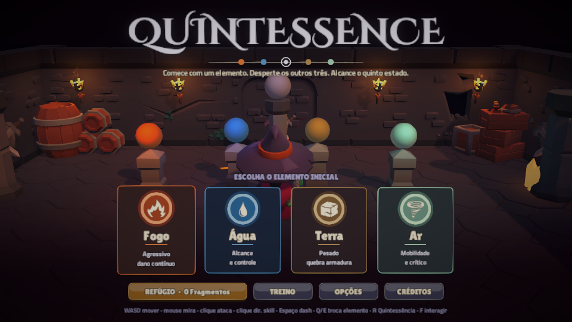
O que mudou
- A cena atrás do menu virou um altar: quatro pedestais com a pedra de cada elemento e, no fundo, o quinto, mais alto e ainda apagado
- O aprendiz aparece de costas, diante do altar
- Cada pedestal fica em cima da carta do seu elemento. Passar o mouse na carta acende o pedestal
- Emblema sob o nome: os quatro elementos ligados por um fio em volta do quinto, que respira devagar
- O escuro do menu agora fica só em cima e embaixo, para o cenário aparecer no meio
- A câmera balança de leve e a luz do quinto pulsa, para a tela não ficar parada
Limites
- Print parado não mostra o balanço da câmera nem a luz pulsando
- A pedra acesa fica mais clara, mas a diferença é discreta
- O chapéu do aprendiz cobre a base do quinto pedestal
- O logo continua sendo só o nome na fonte Cinzel; não desenhei uma marca própria
Dificuldade: a curva subiu
O que mudou
- O Leonardo jogou e achou fácil. A primeira sala voltou a usar os números da ficha do inimigo: 100% de vida e de dano (estava em 85% e 80%)
- Cada camada soma 7% de vida e 5% de dano: a oitava chega a 149% de vida e 135% de dano (antes 134% e 115%)
- O tempo de aviso dos golpes continua igual em todas as camadas
Limites
- Sem print: é só número
- Não sei se o fácil era a run toda ou só o começo; se for só o fim, o ajuste certo é na inclinação, não no ponto de partida
- O herói do roteiro passa na run curta com esta curva, mas ele leva só 35% do dano nesses testes, então isso não diz se está justo
Inimigo morto se desmonta em ossos
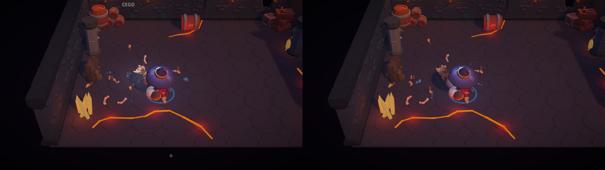
Como funciona
- Ao morrer, o esqueleto se desmonta nas próprias peças: crânio, mandíbula, costelas, braços, pernas, capa e o que estiver carregando
- As peças voam na direção do golpe, quicam no chão, param, e depois de uns 3 segundos encolhem e somem
- Vale para os quatro inimigos e para o Guardião (que solta o machado, o escudo e os cristais)
- Os bonecos do Treino não se desmontam, porque eles voltam
Também corrigido
- O piscar de dano apagava a cor própria do inimigo depois do primeiro golpe (o tom quente do Explosivo, o cinza do Guardião). Agora ele multiplica por ela
Limites
- Os ossos não colidem com as coberturas da sala nem entre si; só com o chão e as paredes de fora
- Não medi o desempenho no navegador com muitos inimigos morrendo juntos
- A animação de morte do pack deixou de aparecer: o corpo some na hora e ficam os ossos
Guardião das Cinzas: primeira versão do visual próprio
O que mudou
- Ossos em cinza escuro, em vez do esqueleto avermelhado
- Machado do pack na mão direita e escudo na esquerda
- Cristais âmbar da corrupção crescendo nas costas e nos ombros, os mesmos do cenário
Limites
- É uma proposta para você olhar, não o chefe final: continua sendo o esqueleto guerreiro do pack ampliado
- O machado fica apontado para o lado, porque a animação parada do pack é de mãos vazias
- Os ataques continuam com as mesmas animações; ele não golpeia com o machado de um jeito próprio
- Na câmera do jogo ele fica menor que nestas fotos de perto
Efeitos do Guardião e da Quintessência
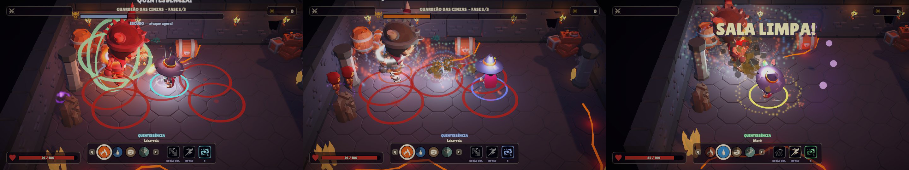
Guardião das Cinzas
- Solta brasa e cinza o tempo todo, e nasce no meio de uma nuvem delas
- Escudo visível: três aros girando em volta dele enquanto o escudo está de pé. Cor de aço no escudo comum; quando só a Quintessência quebra, os aros passam pelas cores dos elementos e aparece o aviso
- Escudo quebrado estilhaça em lascas de aço, com tremor e pausa de impacto
- Troca de fase e explosões levantam brasa e pedra
- Na morte: os quatro anéis de elemento, brasa, cinza e uma pausa mais longa
Quintessência
- Ao ativar, os quatro elementos saem juntos, cada um com o seu efeito
- Enquanto dura, um elemento sorteado gira em volta do herói a cada instante
- O aviso na tela agora está acentuado ("QUINTESSÊNCIA!")
Limites
- O Guardião continua sendo o esqueleto do pack ampliado e pintado de vermelho; isto é efeito por cima, não o chefe personalizado da fila
- Na luta há muita coisa na tela ao mesmo tempo (avisos no chão, anéis, partículas). Não avaliei se atrapalha a leitura dos golpes
- Não medi o desempenho no navegador com o chefe e todos esses efeitos
Cada elemento com o seu efeito, e desempenho medido no navegador
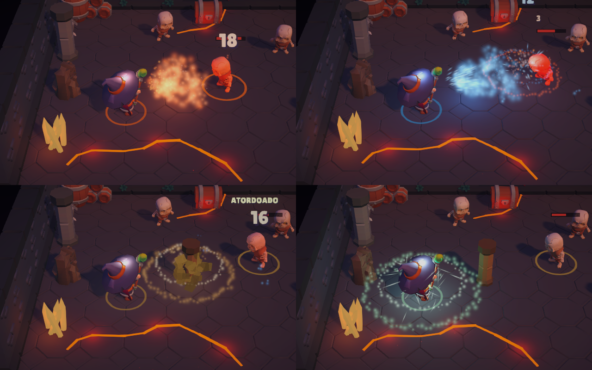
Efeitos por elemento
- Antes os quatro elementos usavam o mesmo efeito, mudando só a cor. Agora cada um se comporta de um jeito:
- Fogo: brasas que sobem e tremem
- Água: gotas alongadas que sobem e caem em arco
- Terra: lascas de pedra, poucas, pesadas e girando
- Ar: riscos finos e rápidos, sem peso
- Aparecem no golpe, no finalizador, na skill, no dash e na troca de elemento. A reação solta os dois elementos do par
Desempenho
- F3 mostra quadros por segundo e o pior quadro do último meio segundo
- Medido no Chrome, em combate na primeira sala: 120 fps, pior quadro de 10 ms
- Build de 19,3 MB (o teto que definimos é 80 MB). Não cortei nada: o maior item é o logo do Unity, que a licença gratuita não deixa tirar
Limites
- A medição foi num Mac só, com dois inimigos na tela e antes dos efeitos novos entrarem. Não medi sala cheia, chefe, nem máquina fraca
- Print parado não mostra o movimento: a diferença entre subir, cair e riscar só aparece jogando
- As lascas de Terra saíram num tom oliva, mais claro que a pedra do cenário
- A Quintessência e o chefe continuam com os efeitos de antes
Também acertei o escopo e o kanban do Miguel: vários itens já estavam entregues desde as primeiras semanas e seguiam marcados como pendentes.
Pausa refeita, Opções, Créditos, GDD e build conferida no navegador
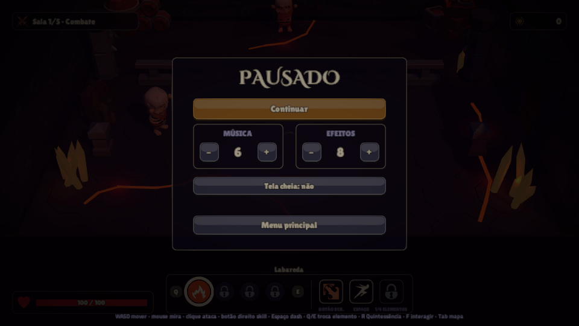
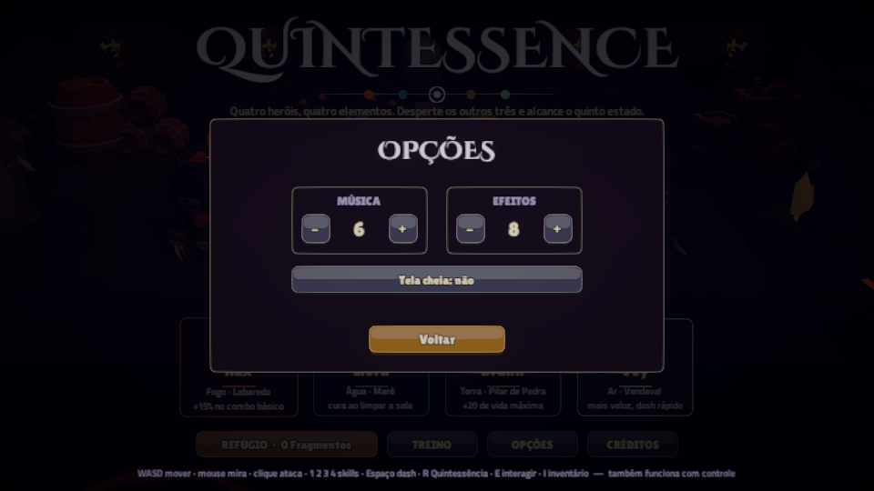
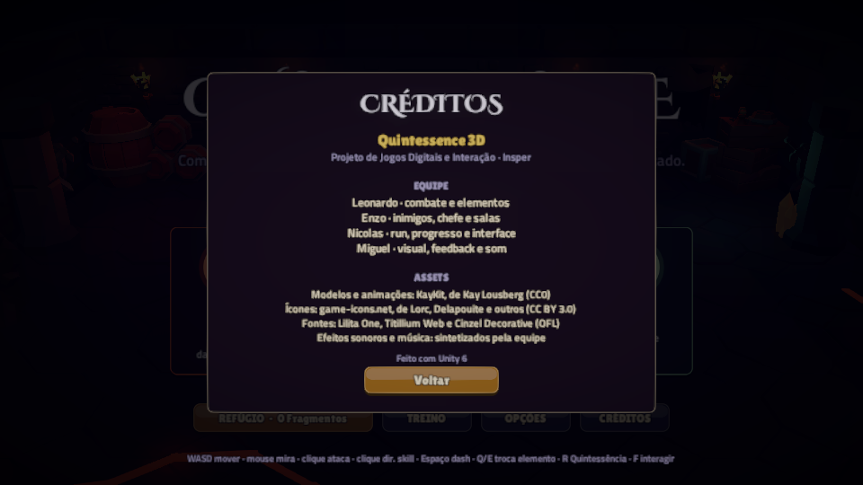
O que mudou
- Pausa virou um painel só: Continuar, volumes, tela cheia e Menu principal. Antes as caixas de volume encostavam no título
- Opções e Créditos no título, ao lado de Refúgio e Treino. Opções tem os dois volumes e tela cheia
- No Treino os bonecos ficaram mais perto, para a caixa do passo não cobrir os do fundo
- GDD em DDE escrito em docs/GDD.md, pronto para colar no Milanote
Build WebGL nova, conferida no Chrome
- Título carrega com as cartas e os botões novos; Treino abre e conta o movimento; Esc pausa e volta ao menu
- Deixei o herói morrer, recarreguei a página e o Refúgio mostrou as runs contadas: o save funciona no navegador
Limites
- No GDD, a história do Guardião, dos Mestres e do Mercador é proposta minha: está marcada e precisa do ok de vocês
- Os créditos mostram só o primeiro nome de cada um; me passem os nomes completos se quiserem
- Tela cheia não foi testada no navegador, nem a pausa ao trocar de aba
- A conferência no navegador foi feita na build anterior a esta mudança de menus; o zip novo foi gerado depois, sem repetir a conferência
- Na build, o herói parado na primeira sala morreu em 20 segundos. Mesmo com a curva nova, a primeira sala pune quem para
Estados e erros: nada prende o jogador na sala
Redes de segurança novas
- Inimigo fora da sala ou fora do chão navegável volta sozinho em meio segundo. Antes ele ficava parado para sempre e a sala nunca limpava
- Luta travada: 25 segundos de combate sem ninguém levar dano trazem os inimigos vivos para perto do herói
- Herói fora da sala (atravessou parede, caiu) volta para a entrada
- Perder o foco da janela ou trocar de aba pausa o jogo em vez de deixar o herói apanhar sozinho
O que já existia e agora tem teste
- Santuário sem elemento para despertar abre as portas e paga Essência
- Morrer leva ao resultado; "Jogar de novo" começa com vida cheia, tempo normal e sem pausa presa
- Save estragado vira progresso zerado; loja sem Essência deixa sair; sala do Mestre sem bênção sobrando abre as portas
Conferido
- Um teste provoca cada situação numa sala de verdade: joga o herói 30 m para baixo, arremessa um inimigo para fora do mapa, congela todos num canto, tira o foco, abre o Santuário com os quatro elementos e mata o herói
Limites
- Sem print: esta entrega não tem nada novo para ver na tela
- A pausa por perda de foco foi testada simulando o aviso do Unity, não trocando de aba num navegador
- O Guardião não tem o resgate automático dos inimigos comuns
- Não procurei travas na build WebGL em si (tela cheia, redimensionar, áudio bloqueado pelo navegador)
O teste do Explosivo, que dependia da sorte do roteiro, agora solta um ao lado do herói quando nenhum explodiu durante a luta.
Treino: sala que ensina marca → troca → reação
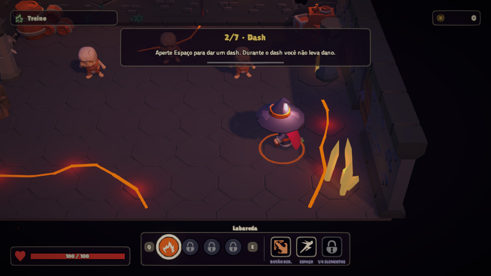
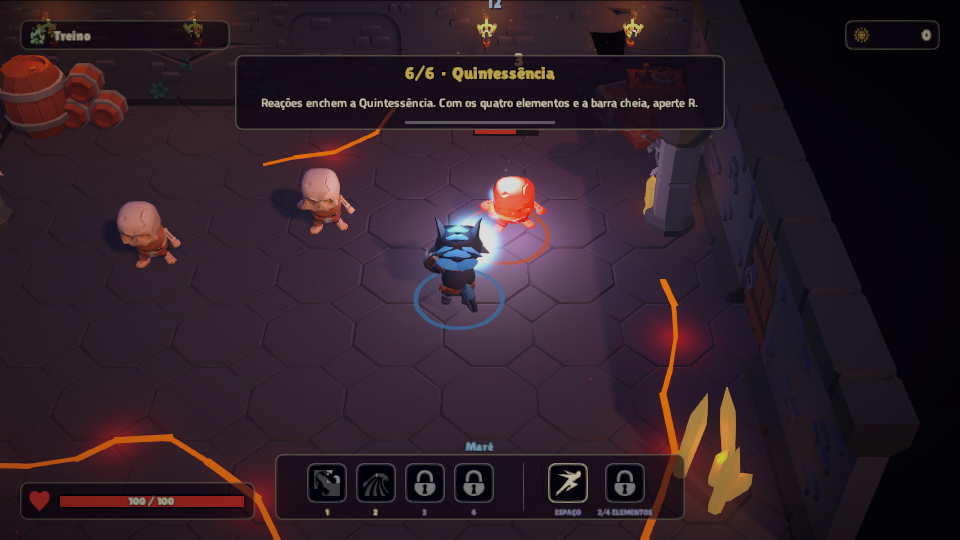
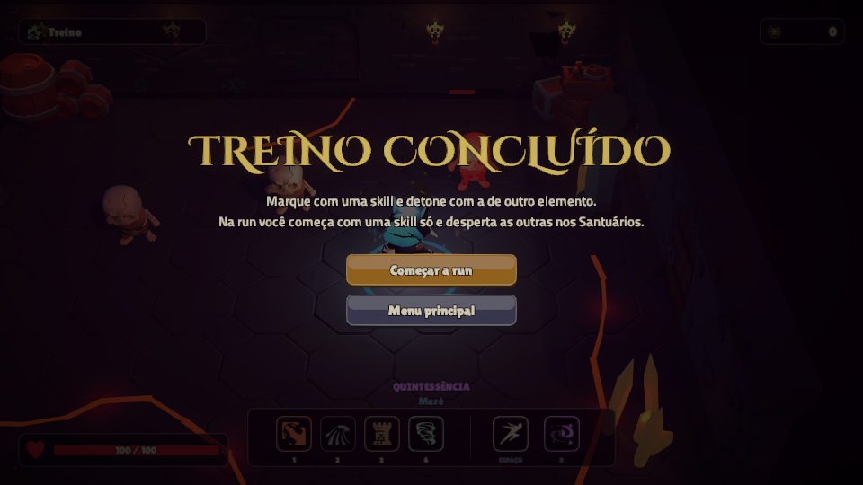
Como funciona
- Botão Treino no título abre uma sala com três bonecos que não revidam
- Sete passos, um de cada vez, numa caixa no topo: mover, dash, atacar e marcar, skill, trocar de elemento, reação e Quintessência
- Só o passo atual conta: sair batendo não pula a lição de mover
- O treino entrega o que cada passo precisa: o segundo elemento na hora da troca, e os quatro com a barra cheia na Quintessência
- No fim: "Começar a run" ou "Menu principal". Esc pausa e deixa sair a qualquer momento
Conferido
- Um teste abre o treino pelo título e faz os sete passos com o herói do roteiro, até a tela final, sem perder vida
- Regras: sinal errado não avança, atacar pede três golpes, e depois de concluído nada mais muda
Limites
- É opcional: quem clicar direto num elemento começa a run sem passar por ele
- O texto do passo é só escrito; não há seta nem destaque na tecla
- Não ensina portas, mapa, loja nem bênçãos
- O treino começa sempre com Fogo
Elite com traço e curva de dificuldade
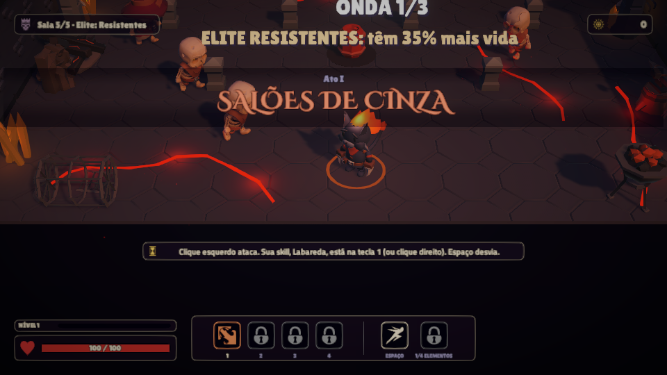
Como funciona
- Curva: vida e dano dos inimigos sobem a cada camada. A primeira sala tem 85% da vida e 80% do dano da ficha; a oitava, 134% e 115%
- O tempo de aviso dos golpes nunca muda: fica mais duro, não mais injusto
- Elite agora tem um de três traços: Velozes (andam 25% mais rápido e atacam com menos intervalo), Resistentes (+50% de vida) ou Ferozes (+30% de dano)
- O traço aparece na porta antes de entrar ("Elite: Velozes"), no canto da sala e num aviso ao começar
- Inimigo de Elite é 12% maior, para dar para ver a diferença
- Chefe, loja e as outras salas não são afetados
Conferido
- Um teste entra na primeira sala e mede a vida de cada inimigo (85% da ficha); depois abre Elite Resistentes e Elite Velozes na 5ª camada e mede vida e velocidade
- Regras: a curva só sobe, cada traço muda só o próprio número, e o traço de uma sala é sempre o mesmo para a mesma semente
Limites
- Baixei o começo da run por conta própria, porque o herói do roteiro vinha chegando quase morto. Os números são chute até alguém jogar no teclado
- Os reforços que o Guardião chama não seguem a curva
- O aviso do traço encosta no texto "Onda 1/3" no topo da tela
Botões e cartas de elemento refeitos, baús virados para a câmera
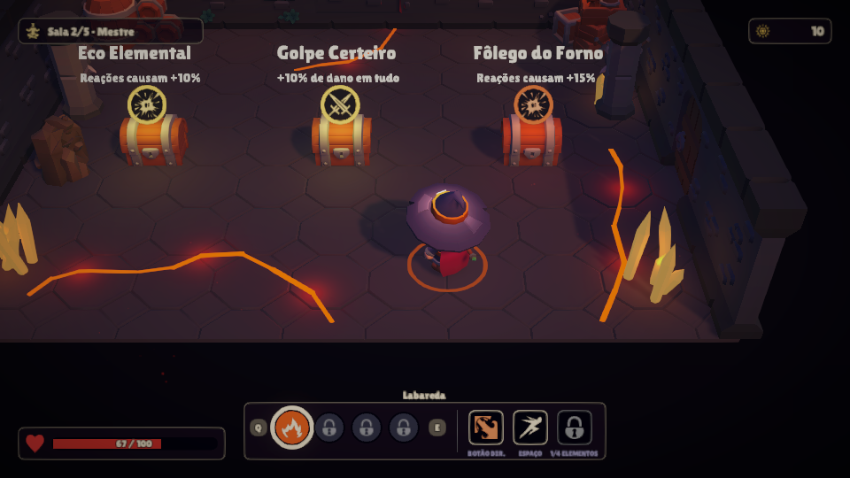
O que mudou
- Botões (todos: título, Refúgio, pausa, resultado, volume): cantos arredondados, base escura embaixo que dá espessura, contorno e brilho leve no topo. Crescem sob o mouse e afundam no clique
- Paleta de botão única: âmbar fosco para a ação principal, ardósia para a secundária, vermelho só na confirmação de apagar
- Cartas de elemento: fundo escuro, com a cor do elemento só no contorno, no medalhão e no filete
- No Refúgio o ícone não encosta mais no nome da melhoria
- Baús das bênçãos estavam de costas: agora mostram a fechadura
Limites
- O efeito de crescer sob o mouse não aparece em print; só jogando
- Pausa e resultado ganharam os botões novos, mas não tirei print novo dessas telas
O teste do atirador que falhava de vez em quando agora espera o tiro com o herói parado, em vez de depender de como a luta corre.
Refúgio: melhorias permanentes e save
Como funciona
- Toda run rende Fragmentos: 3 por sala vencida e mais 15 ao vencer o Guardião. Aparecem na tela de resultado
- No título, o botão Refúgio mostra quantos você tem e abre o painel
- Cinco melhorias que valem para todas as runs: Vigor (+8 de vida por nível), Força (+4% de dano), Bolsa (começa com Essência), Foco (Quintessência mais rápida) e Fôlego (cura ao limpar a sala)
- Cada nível custa mais que o anterior; o painel mostra o efeito atual e o próximo
- O progresso é salvo sozinho a cada compra e a cada fim de run (no navegador, fica no armazenamento do site)
- "Apagar progresso" pede uma segunda confirmação
Conferido
- Um teste ganha 39 Fragmentos, compra Vigor, Bolsa e Força pelo painel, relê o save do disco e começa uma run: 108 de vida, 8 de Essência e +4% de dano
- Save vazio, cortado ou adulterado nunca derruba o jogo: vira progresso zerado ou valores dentro dos limites
- Os testes usam um save separado, então rodar teste não mexe no progresso de quem joga na máquina
Limites
- É um painel no título, não uma sala 3D para andar
- Preços e ganhos são chute: uma run que morre na 4ª sala paga um nível
- Não testei o save na build WebGL; o zip em
Builds/é de antes desta entrega
Loja com cara de loja, e ícone próprio para cada bênção
O que mudou
- Banca do mercador à esquerda: balcão com toalha, pilhas de moedas, velas, estantes atrás, barris, baú de ouro e moedas pelo chão. Tudo peça do pack
- Mercador atrás do balcão: o modelo de aventureiro do pack com outra paleta (chapéu verde), parado em idle, com a placa "Mercador"
- O cubo saiu: cada bênção agora é um medalhão com o ícone do efeito e o aro na cor do mestre, na Loja e na sala do Mestre
- 13 ícones novos, um por tipo de efeito (dano, reação, crítico, velocidade, dash, recarga, vida, cura...). Os mesmos aparecem nas medalhas do HUD e na pausa
- Poção e Elixir agora são frascos diferentes
Limites
- As estantes ficam atrás do mercador e quase somem no escuro do fundo
- O mercador é só cenário: não fala nem reage à compra
- O baú de ouro lido de cima parece um barril
- Com 4 itens, os nomes das bênçãos ficam bem próximos um do outro
Ícones de game-icons.net (CC BY 3.0), mesma fonte dos outros.
Loja: a Essência agora compra coisas
Como funciona
- Nova sala no mapa: Loja, da terceira sala em diante, no máximo uma por camada
- Sempre vende Poção (cura 40%) e Elixir (+15 de vida máxima), mais até duas bênçãos que você ainda não tem
- Cada item fica numa mesa do pack com nome, efeito e preço; F compra
- Sem Essência suficiente: recusa, toca o som de bloqueio e mostra "Essência insuficiente"
- As portas já estão abertas: dá pra sair sem comprar nada
- Preços sobem com a profundidade, junto com o que as salas pagam (poção 22, elixir 32 e bênção 38 na sala 3)
Conferido
- Um teste joga até a Loja, zera a Essência e tenta comprar (nada muda), depois compra tudo e confere: Essência cai, poção cura, elixir aumenta a vida máxima, bênçãos entram na run, itens somem da mesa e as portas continuam
- Regras: nunca vende bênção que você já tem, gasto nunca deixa a Essência negativa, e com duas salas de combate já dá pra pagar a poção
Limites
- Preços e ganhos são chute inicial: ninguém jogou uma run pra sentir se a Essência sobra ou falta
- Nem toda run tem Loja (depende do sorteio do mapa)
- No print o herói do roteiro chegou com 9 de vida mesmo levando 40% do dano: mais um sinal de que as salas de combate podem estar duras
- A porta atrás mostra "Novo elemento" cortado no topo da tela
Também corrigi um teste dos inimigos que falhava de vez em quando (o atirador morria antes de disparar e o teste cobrava o tiro).
Build WebGL rodando no navegador
O que foi provado
- A build WebGL compila sem erros em 3,7 min e pesa 18,8 MB (o limite que pusemos no escopo era ~80 MB)
- Servida localmente e aberta no Chrome: o título carrega, com fontes e ícones
- Clicar em Fogo começa a run: sala, layout, inimigos atacando, HUD (o print acima é do navegador, sala 1/8, herói com 76 de vida)
- Nenhum erro no console; só avisos de efeitos de pós-processamento que o jogo não usa
- O zip pronto pro itch.io está em
Builds/Quintessence-WebGL.zip(18,5 MB, comindex.htmlna raiz)
Como refazer
- Menu Quintessence > Build WebGL (itch.io), ou
unity build --target WebGL --execute-method BuildTools.BuildWebGL -o Builds/WebGL
O que não foi provado
- Só olhei o título e os primeiros segundos da primeira sala. Não joguei uma run inteira no navegador
- Não ouvi o som no navegador nem medi a taxa de quadros
- Testado só no Chrome, neste Mac. Não testei Firefox, Safari nem máquina mais fraca
- Não subi no itch.io: precisa da conta e da página do jogo
- Na página padrão do Unity o jogo aparece numa janela de 1280×720 com barra embaixo; no itch isso se ajusta nas opções de embed
Pra subir no itch
- Criar o projeto, tipo "HTML", enviar o zip e marcar "This file will be played in the browser"
- Tamanho do embed 1280×720 e ligar o botão de tela cheia
Seis layouts de sala, com cobertura e perigo
Os layouts (da esquerda pra direita, de cima pra baixo)
- Pilares: quatro pilares altos; bloqueiam tiro
- Corredor: três muretas que cortam a sala em faixas
- Praça: monte de caixas e barris no centro, bom contra atirador
- Ruínas: entulho espalhado, um pilar e uma coluna
- Fornalha: três respiradouros de brasa e duas colunas
- Cruz: muretas em cruz com dois respiradouros no fundo
Como funciona
- Cada sala de Combate e Elite sorteia um layout pela semente da run; a mesma semente dá sempre os mesmos
- Peças são modelos do pack com colisor; os inimigos desviam delas sozinhos
- Respiradouro de brasa: a cada 4,5 s avisa um círculo e entra em erupção, 8 de dano em quem estiver em cima, herói ou inimigo
- Cada layout é um asset: dá pra mover peça no Inspector sem tocar em código
- Chefe, Santuário, Mestre e Descanso continuam em sala vazia
O que foi conferido
- Teste automático nos assets: nenhuma peça em cima da entrada, na faixa das portas ou fora da sala; toda cobertura tem colisor e recorte de navegação
- Um teste carrega os seis e tira os prints acima
- As runs de teste continuam chegando à vitória com os layouts no caminho
O que não foi
- Se os layouts são bons de jogar: ninguém jogou neles; as posições são um primeiro chute
- O respiradouro ferir inimigos e herói foi escrito, mas não há teste jogando que confira o dano dele
- O roteiro de teste ganhou um "passo de lado" pra não ficar preso numa mureta; um jogador de verdade não precisa disso, mas mostra que dá pra encostar e travar o movimento reto
- São 6 de 8 planejados, e as paredes e o piso são sempre os mesmos
- A marca do respiradouro no chão ainda parece um disco pintado
Som: 32 efeitos e 2 músicas
Como foi feito
- Tudo sintetizado por um script do projeto (
tools/gen_audio.py, usa só o ffmpeg): ondas, ruído filtrado e eco curto. Não há arquivo de terceiros, então não há licença pra creditar - Pra mudar um som: edita a receita no script e roda de novo
- O jogo toca sozinho a partir dos eventos: cada elemento tem som de ataque e de skill, e há sons de acerto, dano, morte, reação, aviso de ataque, explosão, bloqueio, onda, sala limpa, porta, bênção, cura, chefe, vitória e derrota
- Música de ambiente em loop; cruza pra música do chefe quando ele aparece e volta no fim
- Volume de música e de efeitos na tela de pausa, de 0 a 10, guardado entre sessões
O que eu não sei
- Se soa bem. Conferi que os arquivos existem, têm duração e volume plausíveis e que o jogo os dispara sem erro. Nunca ouvi nenhum
- Som sintetizado tende a soar "de sintetizador"; pode destoar do visual do pack do mesmo jeito que o neon destoava
- A mixagem (o que fica alto demais junto) só dá pra acertar jogando
- No navegador (WebGL) o áudio só começa depois do primeiro clique; não testei numa build
Ouça abaixo e me diga o que trocar. Se a música não servir, a saída é buscar faixas livres prontas.
Música
Ataques e skills
Combate
Run e chefe
UI refeita: ícones de verdade e barra de habilidades
O que mudou
- Ícones desenhados no lugar dos círculos coloridos: chama, gota, pedra e redemoinho nos elementos; um ícone próprio pra cada skill (Labareda, Maré, Pilar de Pedra, Vendaval), dash, Quintessência, vida e essência
- Barra de habilidades num painel só: os quatro elementos entre Q e E, depois skill, dash e Quintessência, cada um com a tecla embaixo
- Elemento não desperto mostra cadeado; o atual cresce e ganha aro; a recarga escurece o ícone girando
- A skill mostra o ícone e o nome do elemento atual; a Quintessência enche como um relógio e diz "2/4 elementos" enquanto está travada
- Painéis arredondados em vida, sala, essência e aviso de interação (com a tecla F desenhada)
- Mapa com ícone por tipo de sala (espadas, caveira coroada, portal, fogueira, mestre, chefe)
- Bênçãos viram medalhas no canto; os nomes e a lista de teclas foram pra tela de pausa
- Título com os ícones dos elementos nos botões
Ainda ruim
- Os prints estão em 960×540; em tela cheia tudo fica com o dobro do tamanho, mas não conferi a leitura em resolução real
- O ícone da Labareda é confuso de ler
- "SALA LIMPA!" e os números do mundo passam por cima dos rótulos das portas
- Botões de pausa, resultado e título continuam retângulos lisos; o título segue genérico
- Sem animação de entrada, sem som de clique
De onde vêm os ícones
- game-icons.net, licença CC BY 3.0 (exige crédito, que está no README): Lorc, Carl Olsen e Skoll
- São silhuetas brancas que o jogo tinge; convertidas de SVG pra PNG aqui
Chefe: Guardião das Cinzas
A luta
- 600 de vida em três fases (terços da barra, marcados no HUD)
- Pancada: círculo grande à frente · Leque de brasas: 3 projéteis em leque (5 na última fase) · Erupção: vários círculos em volta de você, a partir da fase 2
- Todo ataque é avisado no chão; a cada fase ele fica mais rápido e chama reforços
- Fase 3: escudo. O chefe fica imune até levar um golpe durante a Quintessência. É o momento em que dominar os quatro elementos vira a chave da luta
- O HUD diz o que fazer: "cause reações nos reforços para encher a Quintessência" → "aperte R e ataque!"
- Ao morrer, os reforços caem junto e a sala fecha
Sem beco sem saída
- Com o escudo de pé o chefe continua chamando reforços, que são onde você faz reações pra encher o medidor
- Se o herói não tem os quatro elementos (não dá pra usar Quintessência), o escudo cai sozinho em 12 s
Limites
- O modelo é o esqueleto guerreiro do pack ampliado e escurecido; não é um modelo próprio de chefe
- No vídeo o roteiro leva 35% do dano e o medidor de Quintessência é completado por fora no momento do escudo; encher o medidor só com reações nos reforços não foi conferido jogando
- A queda do escudo por tempo foi testada como regra, não numa luta
- Números de vida e dano sem balanceamento
Passada de estilo: menos neon, mais pack
O que mudou
- Portas: saíram os arcos de cubo colorido; agora é a porta de madeira do próprio pack, na parede do fundo, com rótulo creme
- Santuário: coluna de pedra do pack com uma pedra fosca na cor do elemento
- Bênçãos: baú do pack no lugar do pedestal de cubo
- Cores dos elementos dessaturadas (terracota, azul-ardósia, ocre, verde-sálvia) em anéis, HUD, partículas e números
- Anéis no chão mais finos e opacos; aviso de ataque virou vermelho-tijolo fosco
- Chefe, Explosivo, projétil e cristais sem o brilho estourado
Ainda destoa
- As rachaduras de brasa e os cristais do chão continuam sendo o ponto mais brilhante da sala
- O estandarte que diferencia o tipo de sala não aparece na porta (ficou atrás ou fora do quadro); hoje só o texto diz pra onde ela leva
- Partículas de feitiço ainda são bolinhas aditivas; o menu de título segue genérico
- A pedra do elemento no santuário e na bênção é esfera/cubo liso
Sobre o atlas de pixel art que você mandou
- São 1,4 milhão de sprites 16×16 gerados por IA, licença CC0, 694 MB
- Dá pra usar, mas pixel art não conversa com o low-poly do pack no mundo 3D. Onde pode caber: ícones pequenos de HUD (bênçãos, tipo de sala). Não baixei nada ainda
Bênçãos · sala do Mestre e recompensa de Elite
Como funciona
- Nova sala no mapa: Mestre. Três bênçãos em pedestais, você aceita uma com F e as portas abrem
- Sala Elite agora paga uma bênção (além da Essência), também à escolha entre três
- 20 bênçãos num asset editável (
Assets/Game/Run/Data/Boons.asset): 13 de mestres dos quatro elementos e 7 neutras - Bênção de um elemento só aparece se ele já está desperto; nunca repete uma que você já pegou
- As aceitas ficam listadas no canto do HUD
Exemplos
- Brasa Viva: +20% de dano de Fogo
- Sangue Quente: cura 3 a cada reação
- Casca de Pedra: +25 de vida máxima
- Rajada: dash recarrega 25% mais rápido
- Mão Trocada: Golpe de Troca causa +25%
- Centelha Prismática: Quintessência enche 30% mais rápido
Run atualizada (com Bruto, Explosivo e fontes novas)
Limites honestos
- Dificuldade: com Bruto e Explosivos, o roteiro de teste passou a morrer no chefe provisório da run curta (2 elementos). Pra o teste continuar conferindo o fluxo, o herói do roteiro leva 40% do dano. Isso é só no teste; o jogo real não mudou, e ninguém mediu a dificuldade jogando
- Cada bênção foi testada como regra (muda o número certo); só uma foi conferida jogando de ponta a ponta
- Essência continua sem uso: falta a Loja
- Bênçãos são só números; nenhuma muda como um golpe funciona
- Lista de bênçãos no HUD é texto corrido; com muitas vai ficar comprida
Textos novos + Bruto e Explosivo
Textos
- Saiu a Arial padrão. Agora: Cinzel Decorative no logotipo, Lilita One em números, rótulos e HUD, Titillium Web no texto corrido (as três com licença aberta OFL)
- Números de dano maiores, com sombra, e empilham em vez de se sobrepor quando saem vários juntos
- Título e mapa mais abaixo (seção seguinte) já estão com as fontes novas
Ainda ruim nos textos
- Texto do mundo perto da borda sai cortado da tela (ex.: "TEMPESTADE DE FOGO" no canto)
- A linha de teclas no rodapé e o texto da Quintessência seguem pequenos
- Portas e santuários ainda são rótulo de texto, sem ícone
Inimigos novos (terceira onda do vídeo)
- Bruto: grande, lento, 70 de vida, golpe em área grande (16 de dano, aviso de quase 1 s). Nasce com armadura: leva só 40% do dano, anel e barra azul-aço. O finalizador de Terra quebra a armadura de vez
- Explosivo: pequeno, rápido, alaranjado. Chega perto, avisa um círculo grande e explode: 14 em você, 12 nos outros inimigos. Dá pra matar antes ou usar contra o bando
- Entram na run pela profundidade: Explosivo a partir da sala 3, Bruto a partir da 4, mais nas salas Elite e no Chefe provisório
Limites
- No vídeo o roteiro não ataca os Explosivos de propósito, pra conferir a explosão
- Quebrar a armadura do Bruto só foi conferido como regra (evento), não num teste jogando com Terra
- Sem Terra a armadura não cai: só dá pra vencer o Bruto no dano reduzido
Run S1 + S2 · Do título à vitória: mapa, portas, santuário e HUD
O jogo agora tem começo, meio e fim
- Título: escolher o elemento inicial começa a run
- Mapa ramificado de 8 salas gerado por semente: começa em Combate, termina no Chefe, e todo caminho passa por 3 Santuários (começa com 1 elemento, termina com 4)
- Portas: sala resolvida abre uma porta por caminho, com o tipo da próxima sala e a recompensa escritos em cima. F entra
- Santuário: um orbe por elemento que falta; você escolhe qual despertar
- Descanso cura 30%; sala de Combate paga Essência ou Vida; Elite tem mais ondas e paga o dobro
- Fim: vitória ao limpar o Chefe, derrota se o herói cai; tela com resumo, "Jogar de novo" e "Menu"
- Pausa no Esc, mapa segurando Tab
HUD
- Vida com rastro do dano recente
- Roda dos 4 elementos: apagado se não desperto, anel no atual, recarga da skill girando por cima
- Cargas de dash, medidor de Quintessência (prismático quando pronto), Essência e "Sala 3/8 · Combate"
Ainda não está bom
- O "Chefe" são três ondas grandes; o Guardião das Cinzas não existe
- Toda sala é a mesma arena; a porta troca os inimigos, não o cenário
- Essência não compra nada: sem loja, sem bênçãos, sem hub
- O vídeo é uma run curta de teste (5 salas, 1 santuário) jogada por um roteiro que venceu em 1:29; a de 8 salas não foi jogada até o fim
- Textos do mundo ("ONDA 1/2") aparecem por cima do mapa; HUD é texto e círculos, sem arte
- Nenhuma opção de volume ou tela; sem som
- Dificuldade sem balanceamento nenhum
Pra jogar: abra Assets/Scenes/Title.unity e dê Play.
Inimigos S1 + S2 · IA, aviso de ataque, dois tipos e ondas
O que existe
- Inimigo base: nasce, persegue pelo NavMesh (desvia de pilar e caixa), avisa o golpe, golpeia, recupera, morre
- Todo golpe é avisado no chão: círculo vermelho que enche (corpo a corpo) ou linha (tiro). Saiu da área, não leva dano
- Rastejante: corpo a corpo, 30 de vida, 8 de dano
- Atirador: mantém distância, recua se você chega perto, dispara projétil (7 de dano)
- Ondas: a próxima só vem quando a anterior morre; no fim, "SALA LIMPA!" e o evento que a porta vai escutar
- Status valem: Atordoado/Congelado param o inimigo e cancelam o golpe avisado, Enraizado prende, Encharcado deixa lento, Cego (Vapor) faz errar
- O Pilar de Pedra do herói bloqueia projétil; empurrão move o inimigo
O que o vídeo mostra
- Herói parado: os três rastejantes chegam, avisam e acertam
- Depois um roteiro joga: desvia dos avisos com dash, bate, troca de elemento, usa skill
- Segunda onda com dois atiradores; sala limpa no fim
Ainda não está bom
- O teste não confere que o desvio evita o dano (com vários inimigos ao mesmo tempo ficaria instável); a regra "saiu da área, não leva" está só no código do golpe
- A linha de aviso do tiro atravessa a parede e fica pra fora da sala
- Sem layouts de sala: é a mesma arena do look-dev
- O herói pode morrer, mas não existe tela de derrota nem recomeço (S4)
- Números (vida, dano, tempos) são chute inicial, sem balanceamento
- Bruto, Explosivo, Elite e Chefe ainda não existem
S3 · Terra, Ar, as seis reações e a Quintessência
Os quatro elementos
- Fogo · Labareda (cone, queima) · dash deixa rastro · finalizador queima
- Água · Maré (onda, empurra) · dash limpa status · finalizador encharca
- Terra · Pilar de Pedra (invoca pilar, dano em volta, atordoa) · dash curta que bloqueia 1 golpe · finalizador quebra armadura (+25% de dano no alvo)
- Ar · Vendaval (explosão em volta, empurrão forte) · 2 cargas de dash · 20% de crítico
Quintessência (R)
- Medidor enche 10% por reação causada; precisa dos quatro elementos
- Por 8 s cada golpe troca de elemento sozinho e dispara uma reação sem precisar de marca
- O herói leva metade do dano; anel e luz ficam prismáticos
As seis reações
- Vapor (Fogo + Água): nuvem de 4 s, quem está dentro erra metade dos ataques
- Magma (Fogo + Terra): poça de lava de 4 s
- Tempestade de Fogo (Fogo + Ar): explosão que queima
- Lama (Água + Terra): enraíza e deixa encharcado
- Nevasca (Água + Ar): congela; o golpe seguinte estilhaça (+30%)
- Estilhaços (Terra + Ar): explosão de lascas com empurrão
Ainda não está bom
- Estilhaços é uma explosão em área, não os 6 projéteis do design
- No vídeo o medidor foi completado por fora antes de ativar, pra não ficar longo; a regra das 10 reações é conferida em teste separado
- "Errar ataque" (Vapor) só vale quando existir inimigo que ataca
- O herói entra dentro do boneco ao atacar colado; textos se sobrepõem
- O pilar é o modelo do cenário reduzido e marrom; falta cara de magia de Terra
- Continua sem som, sem HUD e ninguém jogou no teclado ainda
S2 · Fogo e Água, reações e feedback de combate
Feedback que você pediu
- Inimigo pisca vermelho ao apanhar
- Número de dano sobe do alvo, na cor do elemento, maior em golpe forte
- Anel no chão do inimigo mostra a marca (laranja = Fogo, azul = Água)
- Barra de vida aparece em quem apanhou
- Ataque virou rajada de feitiço na cor do elemento, com clarão de luz
- Tremor de câmera e micro-pausa nos golpes fortes e nas reações
- Queimadura solta chamas no alvo; Encharcado deixa o alvo azulado e pingando
Regras novas
- Marca e reação: Fogo marca, Água em cima detona Vapor em área (e vice-versa)
- Troca com Q/E; trocar logo depois de acertar dá o Golpe de Troca (+50%)
- Skill no clique direito: Labareda (cone, Queimadura) e Maré (onda que empurra, Encharcado)
- Dash: a de Fogo deixa rastro que queima; a de Água limpa status negativos
- Finalizador do combo aplica o status do elemento
- Comando apertado no meio do golpe fica guardado 0,25 s em vez de se perder
- O anel sob o herói mostra o elemento atual
O que o vídeo mostra, em ordem
- Combo de Fogo, finalizador queima
- Troca pra Água e bate: TROCA! e VAPOR!
- Maré empurra dois bonecos
- Volta pro Fogo, Labareda no segundo boneco
- Dash de Fogo com rastro
- Alterna elementos no terceiro boneco, reações em sequência
Ainda não está bom
- Vapor é só dano em área + status de errar ataque; a nuvem que fica no chão não existe
- As outras cinco reações têm número na tabela, mas Terra e Ar ainda não são jogáveis (S3)
- Sem som nenhum
- A Maré empurra o boneco pra dentro do pilar; o empurrão precisa respeitar parede
- Sem HUD: cooldown da skill não aparece em lugar nenhum
- Números de dano se sobrepõem quando saem vários juntos
S1 · Herói jogável: movimento, mira, combo e dash
O que o vídeo mostra
- Gravado pelo próprio teste: um roteiro joga a cena e confere as regras
- Herói corre até o boneco, mirando nele
- Combo de 3 golpes (6 + 6 + 10 de dano), o último empurra mais
- Dash de 4 m com invulnerabilidade durante a dash
- Vai ao segundo boneco e bate, avançando, até ele cair
- Câmera segue com suavização e olha um pouco pra onde o herói mira
Como jogar você mesmo
- Abra
Assets/Scenes/Dev/Leonardo_Combat.unitye dê Play - WASD anda · mouse mira · clique esquerdo (segurar) ataca · Espaço dash
Ainda não tem
- Feedback de impacto (flash, número de dano, faísca): é a frente do Miguel, hoje o boneco só amassa e recua
- Elementos, marcas e reações: S2
- Animações de ataque são as genéricas do pack, aceleradas pra caber no tempo do golpe
- A cena de teste ficou mais escura que o look-dev (sem as luzes dos santuários)
S0 · Contratos entre as frentes
ElementType,Team,DamageInfo,IDamageable,Healthe o barramentoGameEvents- Regras em ARQUITETURA.md: cada frente só referencia o Core
S0 · Direção visual (variação B escolhida)